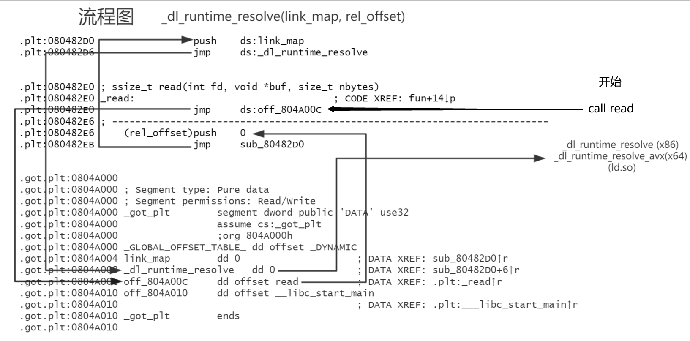
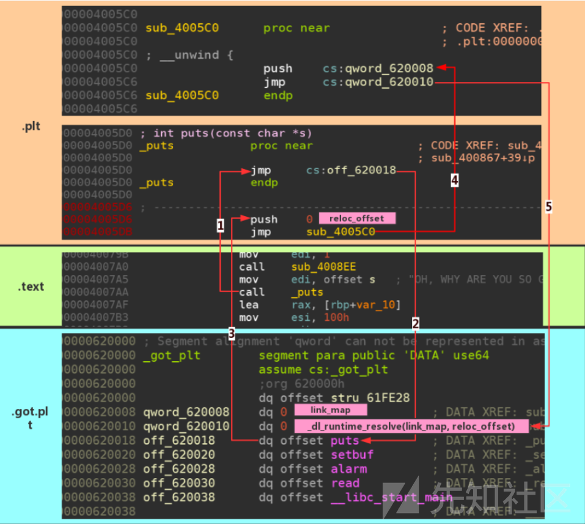

ld-linux.so 动态链接器加载流程浅析
Table of Contents
ld-linux.so 动态链接器加载流程浅析
ld.so 加载
本节讲解 ld.so 刚运行时的加载解析行为
参考
- dl_main源码分析（一）
- dl_main源码分析（二）
- _dl_start源码分析
- Linux动态库加载函数dlopen源码梳理(一)
- Linux动态库加载函数dlopen源码梳理(二)
- 动态链接4 程序员的自我修养第八章笔记
- 《程序员的自我修养——链接、装载与库》
调用栈
调用栈大致如下，下面只介绍其中一部分较为重要的
RTLD_START() (sysdeps/x86_64/dl-machine.h)
_dl_start() (elf/rtld.c)
elf_machine_load_addr()
elf_get_dynamic_info()
ELF_DYNAMIC_RELOCATE() (elf/dynamic-link.h)
elf_machine_runtime_setup() (sysdeps/x86_64/dl-machine.h)
_ELF_DYNAMIC_DO_RELOC() (sysdeps/x86_64/dl-machine.h)
elf_dynamic_do_rel() (elf/do-rel.h)
_dl_start_final() (elf/rtld.c)
_dl_sysdep_start() (sysdeps/generic/dl-sysdeps.h)
_dl_main() (elf/rtld.c)
process_envvars() (elf/rtld.c)
elf_get_dynamic_info()
_dl_setup_hash() (elf.dl-lookup.c)
_dl_new_object() (elf/dl-object.c)
_dl_map_object() (elf/dl-load.c)
_dl_map_object_from_fd() (elf/dl-load.c)
add_name_to_object() (elf/dl-load.c)
_dl_new_object() (elf/dl-object.c)
map_segment()
ELF_{PREFERED,FIXED}_ADDRESS()
mprotect()
munmap()
_dl_setup_hash() (elf/dl-lookup.c)
_dl_map_object_deps() (elf/dl-deps.c)
preload()
_dl_lookup_symbol() (elf/dl-lookup.c)
do_lookup()
_dl_relocate_object() (loop in elf/dl-reloc.c)
_start() (main binary)
相关函数
_start（RTLD_START）
ld.so 的主程序文件在/elf/rtld.c，其中的_start是由/sysdeps/x86_64/dl-machine.h中所定义的RTLD_START宏实现的内联汇编
/* Initial entry point code for the dynamic linker.
The C function `_dl_start' is the real entry point;
its return value is the user program's entry point. */
#define RTLD_START asm ("\n\
.text\n\
.align 16\n\
.globl _start\n\
.globl _dl_start_user\n\
_start:\n\
movq %rsp, %rdi\n\
call _dl_start\n\
_dl_start_user:\n\
# Save the user entry point address in %r12.\n\
movq %rax, %r12\n\
# Read the original argument count.\n\
movq (%rsp), %rdx\n\
# Call _dl_init (struct link_map *main_map, int argc, char **argv, char **env)\n\
# argc -> rsi\n\
movq %rdx, %rsi\n\
# Save %rsp value in %r13.\n\
movq %rsp, %r13\n\
# And align stack for the _dl_init call. \n\
andq $-16, %rsp\n\
# _dl_loaded -> rdi\n\
movq _rtld_local(%rip), %rdi\n\
# env -> rcx\n\
leaq 16(%r13,%rdx,8), %rcx\n\
# argv -> rdx\n\
leaq 8(%r13), %rdx\n\
# Clear %rbp to mark outermost frame obviously even for constructors.\n\
xorl %ebp, %ebp\n\
# Call the function to run the initializers.\n\
call _dl_init\n\
# Pass our finalizer function to the user in %rdx, as per ELF ABI.\n\
leaq _dl_fini(%rip), %rdx\n\
# And make sure %rsp points to argc stored on the stack.\n\
movq %r13, %rsp\n\
# Jump to the user's entry point.\n\
jmp *%r12\n\
.previous\n\
");
_start跳转到_dl_start函数，正式启动 ld.so- 保存
_dl_start的返回值：用户程序入口点（rax） - 从栈中读取参数和环境变量，在栈上设置参数后调用
_dl_init进行初始化 - 保存析构函数
_dl_fini的地址，并调整栈指针 - 最后跳转到用户程序入口点
_dl_start
#ifdef DONT_USE_BOOTSTRAP_MAP
# define bootstrap_map GL(dl_rtld_map)
#else
# define bootstrap_map info.l
#endif
- 定义后面使用的
bootstrap_map结构体为dl_start_final_info结构体类型，详见下文
static ElfW(Addr) __attribute_used__
// __attribute_used__ 是 GCC 的特殊属性，表示这个函数是被使用的，避免编译器产生未使用函数的警告
// ElfW(Addr) 是一个 ELF 文件地址的宏，可以根据目标平台选择合适的字长
_dl_start (void *arg)
{
#ifdef DONT_USE_BOOTSTRAP_MAP
rtld_timer_start (&start_time);
#else
struct dl_start_final_info info; // 结构体 dl_start_final_info 包含一个 link_map 和一个计时器
// 启动一个计时器，并可能初始化 info 结构体中的计时器
rtld_timer_start (&info.start_time);
#endif
- 一些初始化操作
/* Partly clean the `bootstrap_map' structure up. Don't use
`memset' since it might not be built in or inlined and we cannot
make function calls at this point. Use '__builtin_memset' if we
know it is available. We do not have to clear the memory if we
do not have to use the temporary bootstrap_map. Global variables
are initialized to zero by default. */
/* 清理部分‘bootstrap_map’结构体。不要使用‘memset’，因为它可能不是内置或内联的，
此时我们不能进行函数调用。如果我们知道‘__builtin_memset’可用，
请使用它。如果我们不必使用临时的 bootstrap_map，则不必清除内存。默认情况下，
全局变量初始化为零。*/
#ifndef DONT_USE_BOOTSTRAP_MAP
# ifdef HAVE_BUILTIN_MEMSET
__builtin_memset (bootstrap_map.l_info, '\0', sizeof (bootstrap_map.l_info));
# else
/* bootstrap_map 是动态链接器在这个过程中使用的一个关键数据结构。它表示的是
动态链接器自身在进程地址空间中的映射。这个映射包含了动态链接器的代码和数据，以及动态链接器
需要用来解析符号和重定位的各种表格
在动态链接器的代码中，bootstrap_map 通常被用来查找和解析动态链接器自身的符号，
以及设置其他库的依赖关系。*/
for (size_t cnt = 0;
cnt < sizeof (bootstrap_map.l_info) / sizeof (bootstrap_map.l_info[0]);
++cnt)
// 清零 bootstrap_map.l_info，该结构体用于存储加载动态库的相关信息
bootstrap_map.l_info[cnt] = 0;
# endif
#endif
- 这里主要清理部分
bootstrap_map结构体，这个结构体主要记载了动态链接器自身在进程地址空间中的映射，包含了动态链接器的代码和数据，以及动态链接器需要用来解析符号和重定位的各种字段
/* Figure out the run-time load address of the dynamic linker itself. */
// 通过 elf_machine_load_address 函数获取动态链接器在运行时的加载地址，这个地址是 ld.so 在内存中的起始地址
bootstrap_map.l_addr = elf_machine_load_address ();
/* Read our own dynamic section and fill in the info array. */
// 计算动态段的地址，读取自身的动态段信息，并填充 bootstrap_map 结构体
// bootstrap_map.l_ld 存储了动态段的地址，通过 elf_machine_dynamic 计算得到
bootstrap_map.l_ld = (void *) bootstrap_map.l_addr + elf_machine_dynamic ();
// bootstrap_map.l_ld_readonly 被设置为 DL_RO_DYN_SECTION，表示动态段的只读部分
bootstrap_map.l_ld_readonly = DL_RO_DYN_SECTION;
// elf_get_dynamic_info 函数读取 ld.so 自身的动态段信息，并填充到 bootstrap_map 结构体中
elf_get_dynamic_info (&bootstrap_map, true, false);
- 这里主要是 ld.so 的完成自举部分，因为 ld.so 自己是一个解释器程序的同时也是一个动态链接库，所以必须完成自举
- 首先通过找到自己的 GOT 表，进而定位 dynamic 段，再进一步定位到自己的重定位表和符号表，然后得到自己的重定位入口，完成重定位后才算是自举完成
/* 如果 l_addr 不为零或者 DT_GNU_PRELINKED 不存在于动态信息中，执行动态重定位。
重定位是将 ld.so 本身进行位置调整，以便进行正常的函数调用和数据访问 */
if (bootstrap_map.l_addr || ! bootstrap_map.l_info[VALIDX(DT_GNU_PRELINKED)])
{
/* Relocate ourselves so we can do normal function calls and
data access using the global offset table. */
/* 重定位自己，这样就可以使用 GOT 表进行正常的函数调用和数据访问 */
// 函数定义在 dynamic-link.h，第一个参数一个参数，表示动态链接器的映射信息，包括动态库的加载地址、动态段信息等
ELF_DYNAMIC_RELOCATE (&bootstrap_map, NULL, 0, 0, 0);
}
// bootstrap_map.l_relocated 被设置为 1，表示 ld.so 已经完成了重定位
bootstrap_map.l_relocated = 1;
/* Please note that we don't allow profiling of this object and
therefore need not test whether we have to allocate the array
for the relocation results (as done in dl-reloc.c). */
/* Now life is sane; we can call functions and access global data.
Set up to use the operating system facilities, and find out from
the operating system's program loader where to find the program
header table in core. Put the rest of _dl_start into a separate
function, that way the compiler cannot put accesses to the GOT
before ELF_DYNAMIC_RELOCATE. */
/* 现在变得轻松了；我们可以调用函数并访问全局数据。
设置使用操作系统的功能，并从操作系统的程序加载器中获取在核心中找到程序头表的位置。
将 _dl_start 的其余部分放入一个单独的函数中，这样编译器就不能在 ELF_DYNAMIC_RELOCATE
之前将对 GOT（全局偏移表）的访问放入其中。 */
// 初始化与动态内存分配相关的函数，其实就是设置了几个函数指针，比如 __minimal_malloc、__minimal_free 等
__rtld_malloc_init_stubs ();
/* Do not use an initializer for these members because it would
intefere with __rtld_static_init. */
// 将全局变量 dl_find_object 指向 _dl_find_object 函数，这是一个查找动态库的函数
GLRO (dl_find_object) = &_dl_find_object;
- 这里 ld.so 完成自举（Bootstrap）
- ld.so 完成自举后就可以随意调用函数、访问全局变量了。在此之前甚至不能随意调用 ld.so 自己的函数，这是因为 ld.so 是以 PIC 模式编译的，也即程序内部的调用也要经过 PLT/GOT 来实现位置无关代码，所以不自举就没法使用任何函数和全局变量
- 注意这里 libc 还未被映射进内存，所以 ld.so 需要自己实现一套最基本的堆内存操作函数，
__rtld_malloc_init_stubs就负责设置相关的函数指针
{
#ifdef DONT_USE_BOOTSTRAP_MAP
ElfW(Addr) entry = _dl_start_final (arg);
#else
/* 调用 _dl_start_final 函数，该函数负责完成一些后续的初始化工作，
并返回程序的入口地址 entry */
// _dl_start_final 函数的定义在本文件的最后
ElfW(Addr) entry = _dl_start_final (arg, &info);
#endif
#ifndef ELF_MACHINE_START_ADDRESS
# define ELF_MACHINE_START_ADDRESS(map, start) (start)
#endif
// 返回程序入口地址，通过宏 ELF_MACHINE_START_ADDRESS 可能对地址进行修正
// 返回值，也即入口地址会被返回到 _start ，然后被保存在 r12 寄存器中，_start 结束后 jmp 到 r12
return ELF_MACHINE_START_ADDRESS (GL(dl_ns)[LM_ID_BASE]._ns_loaded, entry);
}
}
- 最后，调用
_dl_start_final后返回要运行的程序的入口地址（用宏来解析_dl_start_final的返回值），返回值（rax）会在_start中被保存到r12中，最后直接jmp r12进入程序入口点
_dl_start_final
上面的_dl_start在最后调用了这个函数，这个函数算是_dl_start的后半部分，这里对其进行解释
/* This is the second half of _dl_start (below). It can be inlined safely
under DONT_USE_BOOTSTRAP_MAP, where it is careful not to make any GOT
references. When the tools don't permit us to avoid using a GOT entry
for _dl_rtld_global (no attribute_hidden support), we must make sure
this function is not inlined (see below). */
/* 这是_dl_start的后半部分(如下所示)。它可以在don_use_bootstrap_map下安全地内联，
其中要注意不进行任何GOT表引用。当工具不允许我们避免使用GOT条目
for_dl_rtld_global(不支持ATTRIBUTE_HIDDED)时，我们必须确保该函数没有内联(见下)。*/
- 似乎暂时还不能通过 GOT 表来调用函数，暂时不知道具体原因
#ifdef DONT_USE_BOOTSTRAP_MAP
static inline ElfW(Addr) __attribute__ ((always_inline))
_dl_start_final (void *arg)
#else
static ElfW(Addr) __attribute__ ((noinline))
_dl_start_final (void *arg, struct dl_start_final_info *info)
#endif
{
ElfW(Addr) start_addr;
/* If it hasn't happen yet record the startup time. */
// 如果还没有发生，记录启动时间。
rtld_timer_start (&start_time);
#if !defined DONT_USE_BOOTSTRAP_MAP
// 将 info->start_time 设置为 start_time
RTLD_TIMING_SET (start_time, info->start_time);
#endif
/* Transfer data about ourselves to the permanent link_map structure. */
// 将自身的数据传输到永久的 link_map 结构中
#ifndef DONT_USE_BOOTSTRAP_MAP
GL(dl_rtld_map).l_addr = info->l.l_addr;
GL(dl_rtld_map).l_ld = info->l.l_ld;
GL(dl_rtld_map).l_ld_readonly = info->l.l_ld_readonly;
memcpy (GL(dl_rtld_map).l_info, info->l.l_info,
sizeof GL(dl_rtld_map).l_info);
GL(dl_rtld_map).l_mach = info->l.l_mach;
GL(dl_rtld_map).l_relocated = 1;
#endif
_dl_setup_hash (&GL(dl_rtld_map));
// _dl_rtld_map 就是动态链接器自身的 link_map 结构，它是一个全局变量
GL(dl_rtld_map).l_real = &GL(dl_rtld_map);
GL(dl_rtld_map).l_map_start = (ElfW(Addr)) _begin;
GL(dl_rtld_map).l_map_end = (ElfW(Addr)) _end;
GL(dl_rtld_map).l_text_end = (ElfW(Addr)) _etext;
/* Copy the TLS related data if necessary. */
#ifndef DONT_USE_BOOTSTRAP_MAP
# if NO_TLS_OFFSET != 0
GL(dl_rtld_map).l_tls_offset = NO_TLS_OFFSET;
# endif
#endif
- 函数的开始初始化
link_map结构体dl_rtld_map，其对应 ld.so 本身的信息 link_map结构体用于记录所有要动态链接的文件的相关信息，以链表形式串联，main_map是链表头，用于记录应用程序的链接信息link_map结构体非常大，具体定义放在了文末
/* Initialize the stack end variable. */
// 初始化栈顶指针为当前栈帧的栈底地址
__libc_stack_end = __builtin_frame_address (0);
/* Call the OS-dependent function to set up life so we can do things like
file access. It will call `dl_main' (below) to do all the real work
of the dynamic linker, and then unwind our frame and run the user
entry point on the same stack we entered on. */
/* 调用与操作系统相关的函数以建立生命周期，这样我们就可以执行文件访问等操作。
该函数将调用下面的 `dl_main` 函数来执行动态链接器的所有真正工作，
然后解开我们的栈帧并在我们进入的同一栈上运行用户入口点。 */
start_addr = _dl_sysdep_start (arg, &dl_main);
if (__glibc_unlikely (GLRO(dl_debug_mask) & DL_DEBUG_STATISTICS))
{
RTLD_TIMING_VAR (rtld_total_time);
rtld_timer_stop (&rtld_total_time, start_time);
print_statistics (RTLD_TIMING_REF(rtld_total_time));
}
return start_addr;
}
- 然后是一些栈的调整，最后调用了
_dl_main函数 - 返回值就是要启动的应用程序的入口点，返回给
dl_start，最终在_start被调用
_dl_main（上半部分）
_dl_main函数是 ld.so 的主要功能部分，会完成动态库引用解析、管理、映射等工作。这个函数有一千多行，调用栈也很深，所以这里会尽量分段挑重点进行介绍
static void
dl_main(const ElfW(Phdr) * phdr, ElfW(Word) phnum,
ElfW(Addr) * user_entry, ElfW(auxv_t) * auxv)
{
struct link_map *main_map;
size_t file_size;
char *file;
unsigned int i;
bool prelinked = false;
bool rtld_is_main = false;
void *tcbp = NULL;
struct dl_main_state state;
dl_main_state_init(&state);
__tls_pre_init_tp();
#if !PTHREAD_IN_LIBC
/* The explicit initialization here is cheaper than processing the reloc
in the _rtld_local definition's initializer. */
/* 这里的初始化比在 _rtld_local 定义的初始化器中处理重定位要便宜得多。 */
GL(dl_make_stack_executable_hook) = &_dl_make_stack_executable;
#endif
/* Process the environment variable which control the behaviour. */
/* 处理控制行为的环境变量。 */
process_envvars(&state); // 会设置 GLRO(dl_debug_mask) 的值，用于控制调试信息的输出
#ifndef HAVE_INLINED_SYSCALLS
/* Set up a flag which tells we are just starting. */
/* 设置一个标志，告诉我们刚刚开始。 */
_dl_starting_up = 1;
#endif
- 首先是一些声明和初始化
const char *ld_so_name = _dl_argv[0];
if (*user_entry == (ElfW(Addr))ENTRY_POINT) // 如果入口地址是 _start，那么说明 ld.so 自己作为独立的程序运行
{
/* Ho ho. We are not the program interpreter! We are the program
itself! This means someone ran ld.so as a command. Well, that
might be convenient to do sometimes. We support it by
interpreting the args like this:
ld.so PROGRAM ARGS...
The first argument is the name of a file containing an ELF
executable we will load and run with the following arguments.
To simplify life here, PROGRAM is searched for using the
normal rules for shared objects, rather than $PATH or anything
like that. We just load it and use its entry point; we don't
pay attention to its PT_INTERP command (we are the interpreter
ourselves). This is an easy way to test a new ld.so before
installing it. */
/* 现在的情况下我们不是程序解释器，我们本身就是一个程序，这意味着可以将 ld.so 是作为一个命令独立运行。
这可能有时很方便。我们通过以下方式解释参数来支持它：ld.so 程序 ARGS...
第一个参数是包含我们将使用以下参数加载和运行的 ELF 可执行文件的文件的名称。
为了简化这里的活动，程序使用共享对象的正常规则进行搜索，而不是 $PATH 或类似的任何内容。
我们只是加载它并使用它的入口点；我们不注意它的 PT_INTERP 命令（我们自己是解释器）。
这是在安装它之前测试新的 ld.so 的简单方法。 */
rtld_is_main = true;
char *argv0 = NULL;
/* Note the place where the dynamic linker actually came from. */
/* 注意动态链接器实际来自的位置。 */
GL(dl_rtld_map).l_name = rtld_progname;
while (_dl_argc > 1) // 解析命令行参数（ld.so 作为单独的程序独立运行）
... ...
- 如果程序的入口点等于 ld.so 的入口点，那么说明 ld.so 是作为一个程序独立运行的
- 前面提到过，ld.so 不仅是一个程序解释器、一个动态链接库，它本身其实也是一个可以独立执行的命令文件，这里主要是关于独立执行的部分，我们无需关心
else // ld.so 作为解释器运行
{
/* Create a link_map for the executable itself.
This will be what dlopen on "" returns. */
/* 为可执行文件本身创建一个 link_map。这将是 dlopen (“”）返回的内容。 */
main_map = _dl_new_object((char *)"", "", lt_executable, NULL, // 创建可执行文件的 link_map
__RTLD_OPENEXEC, LM_ID_BASE);
assert(main_map != NULL);
main_map->l_phdr = phdr; // 设置程序头表
main_map->l_phnum = phnum; // 设置程序头表的数量
main_map->l_entry = *user_entry; // 设置入口地址
/* Even though the link map is not yet fully initialized we can add
it to the map list since there are no possible users running yet. */
/* 即使 link map 还没有完全初始化，我们也可以将其添加到 map 列表中，因为还没有可能运行的用户。 */
_dl_add_to_namespace_list(main_map, LM_ID_BASE); // 将可执行文件的 link_map 添加到全局链表中
assert(main_map == GL(dl_ns)[LM_ID_BASE]._ns_loaded);
/* At this point we are in a bit of trouble. We would have to
fill in the values for l_dev and l_ino. But in general we
do not know where the file is. We also do not handle AT_EXECFD
even if it would be passed up.
We leave the values here defined to 0. This is normally no
problem as the program code itself is normally no shared
object and therefore cannot be loaded dynamically. Nothing
prevent the use of dynamic binaries and in these situations
we might get problems. We might not be able to find out
whether the object is already loaded. But since there is no
easy way out and because the dynamic binary must also not
have an SONAME we ignore this program for now. If it becomes
a problem we can force people using SONAMEs. */
/* 在这一点上，我们有点麻烦。我们必须填写 l_dev 和 l_ino 的值。但是一般来说，我们不知道文件在哪里。
我们也不处理 AT_EXECFD，即使它会被传递。我们在这里定义的值为 0。通常这不是问题，因为程序代码本身通常不是共享对象，
因此不能动态加载。没有什么可以阻止使用动态二进制文件，在这些情况下，我们可能会遇到问题。
我们可能无法找出对象是否已加载。但是，由于没有简单的方法，而且动态二进制文件也不能有 SONAME，因此我们暂时忽略此程序。
如果它成为问题，我们可以强制使用 SONAME 的人。 */
/* We delay initializing the path structure until we got the dynamic
information for the program. */
/* 我们延迟初始化路径结构，直到我们获得程序的动态信息。 */
}
- 现在是 ld.so 作为一个程序解释器运行的情况
- 这里初始化了
link_map类型的main_map，记载要加载的应用程序的动态链接信息，然后链接进link_map链表中
bool has_interp = rtld_setup_main_map(main_map); // 设置可执行文件的 map
/* If the current libname is different from the SONAME, add the
latter as well. */
// 如果当前 libname 与 SONAME 不同，则也将后者添加。
if (GL(dl_rtld_map).l_info[DT_SONAME] != NULL && // 如果 ld.so 的 map 的 DT_SONAME 段不为空
strcmp(GL(dl_rtld_map).l_libname->name,
(const char *)D_PTR(&GL(dl_rtld_map),
l_info[DT_STRTAB]) + GL(dl_rtld_map).l_info[DT_SONAME]->d_un.d_val) != 0) // 如果 ld.so 的 map 的 DT_SONAME 段的值与 DT_STRTAB 段的值不相等
{
static struct libname_list newname;
newname.name = ((char *)D_PTR(&GL(dl_rtld_map), l_info[DT_STRTAB]) + GL(dl_rtld_map).l_info[DT_SONAME]->d_un.d_ptr);
newname.next = NULL;
newname.dont_free = 1;
assert(GL(dl_rtld_map).l_libname->next == NULL);
GL(dl_rtld_map).l_libname->next = &newname;
}
/* The ld.so must be relocated since otherwise loading audit modules
will fail since they reuse the very same ld.so. */
// ld.so 必须被重定位，否则加载审计模块将失败，因为它们重用了同一个 ld.so。
assert(GL(dl_rtld_map).l_relocated);
DT_SONAME记录了动态库的名字，如果依赖的动态库没有SONAME，那么记录的名字指的是命令行指定的路径- 而如果对应的动态库有
DT_SONAME项，那么该动态库对应的DT_NEEDED的条目记录的是该动态库的SONAME- 链接器参数
-soname可以用于指定动态库的SONAME
- 链接器参数
if (!rtld_is_main) // 如果 ld.so 不是作为独立的程序运行
{
/* Extract the contents of the dynamic section for easy access. */
/* 提取动态段的内容以便于访问。 */
elf_get_dynamic_info(main_map, false, false);
/* If the main map is libc.so, update the base namespace to
refer to this map. If libc.so is loaded later, this happens
in _dl_map_object_from_fd. */
/* 如果主 map 是 libc.so，则更新基本命名空间以引用此 map。
如果稍后加载 libc.so，则会在 _dl_map_object_from_fd 中发生。 */
if (main_map->l_info[DT_SONAME] != NULL &&
(strcmp(((const char *)D_PTR(main_map, l_info[DT_STRTAB]) + main_map->l_info[DT_SONAME]->d_un.d_val), LIBC_SO) // LIBC_SO 即 libc.so.6
== 0)) // 如果要加载的共享对象是 libc.so.6
GL(dl_ns)
[LM_ID_BASE].libc_map = main_map; // 设置 libc.so 的 map 为 main_map
/* Set up our cache of pointers into the hash table. */
/* 设置指向哈希表的指针的缓存。 */
// 哈希表是用来存储库中的符号的，这里设置指向哈希表的指针的缓存
_dl_setup_hash(main_map);
}
- 接着开始解析和映射工作，首先看要映射的是不是 glibc，如果是就将 libc 的
link_map作为main_map（前面是应用程序的作为main_map），并获取 hash 节的信息
if (__glibc_unlikely(state.mode == rtld_mode_verify))
{
/* We were called just to verify that this is a dynamic
executable using us as the program interpreter. Exit with an
error if we were not able to load the binary or no interpreter
is specified (i.e., this is no dynamically linked binary. */
/* 我们被调用只是为了验证这是一个使用我们作为程序解释器的动态可执行文件。
如果我们无法加载二进制文件或未指定解释器（即，这不是动态链接的二进制文件），则退出错误。 */
if (main_map->l_ld == NULL) // 没有 PT_DYNAMIC 段，即没有动态段，说明不是动态链接的二进制文件
_exit(1);
/* We allow here some platform specific code. */
/* 我们允许这里有一些特定于平台的代码。 */
#ifdef DISTINGUISH_LIB_VERSIONS
DISTINGUISH_LIB_VERSIONS;
#endif
_exit(has_interp ? 0 : 2);
}
struct link_map **first_preload = &GL(dl_rtld_map).l_next;
/* Set up the data structures for the system-supplied DSO early,
so they can influence _dl_init_paths. */
/* 尽早为系统提供的 DSO 设置数据结构，以便它们可以影响 _dl_init_paths。 */
setup_vdso(main_map, &first_preload); // 设置 vDSO
/* With vDSO setup we can initialize the function pointers. */
/* 有了 vDSO 设置，我们可以初始化函数指针。 */
setup_vdso_pointers();
- 这部分应该还是作为独立程序运行的部分，用来验证一个文件是否是动态链接库，下面还有一些关于 vDSO 相关的初始设置，这里我们不关心
/* Initialize the data structures for the search paths for shared
objects. */
/* 初始化共享对象搜索路径的数据结构。 */
call_init_paths(&state); // 封装了 _dl_init_paths 函数，用于初始化搜索路径
/* Initialize _r_debug_extended. */
/* 初始化 _r_debug_extended。 */
struct r_debug *r = _dl_debug_initialize(GL(dl_rtld_map).l_addr, LM_ID_BASE);
r->r_state = RT_CONSISTENT;
/* Put the link_map for ourselves on the chain so it can be found by
name. Note that at this point the global chain of link maps contains
exactly one element, which is pointed to by dl_loaded. */
/* 将我们自己的 link_map 放在链上，以便可以通过名称找到它。
请注意，此时 link map 的全局链仅包含一个元素，该元素由 dl_loaded 指向。 */
if (!GL(dl_rtld_map).l_name)
/* If not invoked directly, the dynamic linker shared object file was
found by the PT_INTERP name. */
/* 如果没有直接调用，则动态链接器共享对象文件是通过 PT_INTERP 名称找到的。 */
GL(dl_rtld_map).l_name = (char *)GL(dl_rtld_map).l_libname->name;
GL(dl_rtld_map).l_type = lt_library;
main_map->l_next = &GL(dl_rtld_map); // 将 ld.so 的 map 放到可执行文件的 map 的后面
GL(dl_rtld_map).l_prev = main_map; // 设置 ld.so 的 map 的前驱为可执行文件的 map
++GL(dl_ns)[LM_ID_BASE]._ns_nloaded; // 增加全局命名空间的加载的共享对象的数量
++GL(dl_load_adds);
/* If LD_USE_LOAD_BIAS env variable has not been seen, default
to not using bias for non-prelinked PIEs and libraries
and using it for executables or prelinked PIEs or libraries. */
/* 如果没有看到 LD_USE_LOAD_BIAS 环境变量，则默认不使用偏差来加载非预链接的 PIE 和库，
并使用它来加载可执行文件或预链接的 PIE 或库。 */
if (GLRO(dl_use_load_bias) == (ElfW(Addr)) - 2)
GLRO(dl_use_load_bias) = main_map->l_addr == 0 ? -1 : 0;
/* Starting from binutils-2.23, the linker will define the magic symbol
__ehdr_start to point to our own ELF header if it is visible in a
segment that also includes the phdrs. If that's not available, we use
the old method that assumes the beginning of the file is part of the
lowest-addressed PT_LOAD segment. */
/* 从 binutils-2.23 开始，如果在包含 phdrs 的段中可见，则链接器将定义魔术符号 __ehdr_start 指向我们自己的 ELF 标头。
如果不可用，则使用假设文件开头是最低地址 PT_LOAD 段的一部分的旧方法。 */
extern const ElfW(Ehdr) __ehdr_start __attribute__((visibility("hidden")));
/* Set up the program header information for the dynamic linker
itself. It is needed in the dl_iterate_phdr callbacks. */
/* 为动态链接器本身设置程序头信息。它在 dl_iterate_phdr 回调中需要。 */
const ElfW(Ehdr) *rtld_ehdr = &__ehdr_start;
assert(rtld_ehdr->e_ehsize == sizeof *rtld_ehdr);
assert(rtld_ehdr->e_phentsize == sizeof(ElfW(Phdr)));
const ElfW(Phdr) *rtld_phdr = (const void *)rtld_ehdr + rtld_ehdr->e_phoff;
GL(dl_rtld_map).l_phdr = rtld_phdr;
GL(dl_rtld_map).l_phnum = rtld_ehdr->e_phnum;
/* PT_GNU_RELRO is usually the last phdr. */
/* PT_GNU_RELRO 通常是最后一个 phdr。 */
size_t cnt = rtld_ehdr->e_phnum;
while (cnt-- > 0)
if (rtld_phdr[cnt].p_type == PT_GNU_RELRO)
{
GL(dl_rtld_map).l_relro_addr = rtld_phdr[cnt].p_vaddr;
GL(dl_rtld_map).l_relro_size = rtld_phdr[cnt].p_memsz;
break;
}
/* Add the dynamic linker to the TLS list if it also uses TLS. */
/* 如果动态链接器也使用 TLS，则将其添加到 TLS 列表中。 */
if (GL(dl_rtld_map).l_tls_blocksize != 0)
/* Assign a module ID. Do this before loading any audit modules. */
/* 分配一个模块 ID。在加载任何审计模块之前执行此操作。 */
_dl_assign_tls_modid(&GL(dl_rtld_map));
audit_list_add_dynamic_tag(&state.audit_list, main_map, DT_AUDIT);
audit_list_add_dynamic_tag(&state.audit_list, main_map, DT_DEPAUDIT);
- 首先调用
call_init_paths，其封装了_dl_init_paths函数，用于初始化动态链接库的搜索路径数据结构 - 然后，如果 ld.so 作为程序解释器运行（那么此前
GL(dl_rtld_map).l_name并未被设置，以此来判断），此时设置l_name为 ELF 程序的PT_INTERP段给出的 ld.so 的路径，也即l_libname->name - 接下来将应用程序对应的
link_map（即main_map）插入到GL(dl_rtld_map)在链表中的位置之前，然后递增link_namespaces的ns_nloaded和dl_load_adds，表示增加链表中link_map的个数 - 再往下获取 ld.so 的 ELF 头
rtld_ehdr和 Segment 头rtld_phdr，将其设置到GL(dl_rtld_map)中，这里的l_map_start是在前面的dl_start_final函数中设置为_begin，而_begin在重定位后指向 ELF 的文件头地址 - 然后找到 ld.so 中类型为
PT_GNU_RELRO的 Segment 头，将其信息设置到dl_rtld_map中，该信息和只读段有关 - 剩下则是 TLS 和审计相关，这里不关心
/* We have two ways to specify objects to preload: via environment
variable and via the file /etc/ld.so.preload. The latter can also
be used when security is enabled. */
/* 我们有两种方法可以指定要预加载的对象：通过环境变量和通过文件 /etc/ld.so.preload。
当启用安全性时，也可以使用后者。 */
assert(*first_preload == NULL);
struct link_map **preloads = NULL;
unsigned int npreloads = 0;
if (__glibc_unlikely(state.preloadlist != NULL)) // 如果有预加载的库
{
RTLD_TIMING_VAR(start);
rtld_timer_start(&start);
npreloads += handle_preload_list(state.preloadlist, main_map, // 加载预加载的库
"LD_PRELOAD");
rtld_timer_accum(&load_time, start);
}
if (__glibc_unlikely(state.preloadarg != NULL)) // 如果有预加载的库
{
RTLD_TIMING_VAR(start);
rtld_timer_start(&start);
npreloads += handle_preload_list(state.preloadarg, main_map,
"--preload");
rtld_timer_accum(&load_time, start);
}
- 首先查看是否有
LD_PRELOAD字段（作为程序解释器时）或--preload命令行参数（作为命令程序时），有的话则说明需要预加载一些动态链接库，于是调用handle_preload_list解析要加载的库，最后在handle_preload_list里会调用do_preload完成预加载do_preload的调用栈最后会调用_dl_map_object完成动态链接库的装载，具体会在后面进行分析
/* There usually is no ld.so.preload file, it should only be used
for emergencies and testing. So the open call etc should usually
fail. Using access() on a non-existing file is faster than using
open(). So we do this first. If it succeeds we do almost twice
the work but this does not matter, since it is not for production
use. */
/* 通常没有 ld.so.preload 文件，它应该仅用于紧急情况和测试。因此，打开调用等通常会失败。
在不存在的文件上使用 access() 比使用 open() 更快。所以我们首先这样做。如果成功，我们将做几乎两倍的工作，
但这并不重要，因为它不是用于生产使用。 */
static const char preload_file[] = "/etc/ld.so.preload"; // 预加载的库的文件路径
if (__glibc_unlikely(__access(preload_file, R_OK) == 0))
{
/* Read the contents of the file. */
/* 读取文件的内容。 */
file = _dl_sysdep_read_whole_file(preload_file, &file_size,
PROT_READ | PROT_WRITE); // 读取文件的内容
if (__glibc_unlikely(file != MAP_FAILED))
{
/* Parse the file. It contains names of libraries to be loaded,
separated by white spaces or `:'. It may also contain
comments introduced by `#'. */
/* 解析文件。它包含要加载的库的名称，由空格或 `:` 分隔。它还可以包含由 `#` 引入的注释。 */
char *problem;
char *runp;
size_t rest;
/* Eliminate comments. */
/* 消除注释。 */
runp = file;
rest = file_size;
while (rest > 0)
{
char *comment = memchr(runp, '#', rest);
if (comment == NULL)
break;
rest -= comment - runp;
do
*comment = ' ';
while (--rest > 0 && *++comment != '\n');
}
/* We have one problematic case: if we have a name at the end of
the file without a trailing terminating characters, we cannot
place the \0. Handle the case separately. */
/* 我们有一个有问题的情况：如果我们在文件末尾有一个没有尾随终止字符的名称，我们无法放置 \0。
单独处理该情况。 */
if (file[file_size - 1] != ' ' && file[file_size - 1] != '\t' && file[file_size - 1] != '\n' && file[file_size - 1] != ':')
{
problem = &file[file_size];
while (problem > file && problem[-1] != ' ' && problem[-1] != '\t' && problem[-1] != '\n' && problem[-1] != ':')
--problem;
if (problem > file)
problem[-1] = '\0';
}
else
{
problem = NULL;
file[file_size - 1] = '\0';
}
RTLD_TIMING_VAR(start);
rtld_timer_start(&start);
if (file != problem)
{
char *p;
runp = file;
while ((p = strsep(&runp, ": \t\n")) != NULL) // 取出 LD_PRELOAD 中的路径
if (p[0] != '\0')
npreloads += do_preload(p, main_map, preload_file);
}
if (problem != NULL)
{
char *p = strndupa(problem, file_size - (problem - file));
npreloads += do_preload(p, main_map, preload_file); // 装载指定的共享库
}
rtld_timer_accum(&load_time, start);
/* We don't need the file anymore. */
/* 我们不再需要该文件。 */
__munmap(file, file_size);
}
}
- 首先调用
_dl_sysdep_read_whole_file会打开文件、读取文件信息，并映射文件到内存中，这里目标是/etc/ld.so.preload- 这个函数会用
open64系统调用打开文件，用fstat64读取文件信息（文件大小），然后用mmap系统调用将其映射到内存中（第一个参数是 NULL，即让内核自动选择映射的起始地址），最后关闭fd，返回mmap的指针
- 这个函数会用
preloadlist由环境变量LD_PRELOAD指定，由此前的函数process_envvars赋值。接下来复制一份LD_PRELOAD的值到list中，然后循环调用strsep，根据分隔符:取出LD_PRELOAD中指定的各个路径- 通过
do_preload函数装载指定路径p的共享库，npreloads变量最后记录了提前装载的共享库个数do_preload里的调用链为：_dl_catch_error->map_doit->_dl_map_object，前两个函数都是错误处理、函数封装之类，最后的_dl_map_object才是真正负责装载动态链接库的函数
- 最后完成一切后调用
munmap系统调用解除文件的映射
_dl_map_object
/* Map in the shared object file NAME. */
// 从文件中加载共享对象
struct link_map *
_dl_map_object(struct link_map *loader, const char *name, // loader为main_map，name为共享对象名称
int type, int trace_mode, int mode, Lmid_t nsid)
{
int fd;
const char *origname = NULL;
char *realname;
char *name_copy;
struct link_map *l;
struct filebuf fb;
assert(nsid >= 0);
assert(nsid < GL(dl_nns));
/* Look for this name among those already loaded. */
// 查找已经加载的共享对象
for (l = GL(dl_ns)[nsid]._ns_loaded; l; l = l->l_next) // 遍历已经加载的共享对象
{
/* If the requested name matches the soname of a loaded object,
use that object. Elide this check for names that have not
yet been opened. */
// 如果请求的名称与已加载对象的soname匹配，则使用该对象。对于尚未打开的名称，省略此检查。
if (__glibc_unlikely((l->l_faked | l->l_removed) != 0))
continue;
if (!_dl_name_match_p(name, l))
{
const char *soname;
if (__glibc_likely(l->l_soname_added) || l->l_info[DT_SONAME] == NULL) // 如果l_soname_added为1或者l_info[DT_SONAME]为NULL，意思是已经加载过了
continue;
soname = ((const char *)D_PTR(l, l_info[DT_STRTAB]) + l->l_info[DT_SONAME]->d_un.d_val); // 获取soname
if (strcmp(name, soname) != 0)
#ifdef __arm__
if (strcmp(name, "ld-linux.so.3") || strcmp(soname, "ld-linux-armhf.so.3"))
#endif
continue;
/* We have a match on a new name -- cache it. */
// 我们在新名称上有一个匹配——缓存它。
add_name_to_object(l, name); // 将name添加到l的名称列表中
l->l_soname_added = 1; // 设置l_soname_added为1，表示已经加载过了，如果再次遇到那么在上面的if中会跳过
}
/* We have a match. */
return l;
}
/* Display information if we are debugging. */
// 如果我们正在调试，则显示信息。
...
#ifdef SHARED
/* Give the auditing libraries a chance to change the name before we
try anything. */
// 在我们尝试任何事情之前，让审计库有机会更改名称。
...
#endif
/* Will be true if we found a DSO which is of the other ELF class. */
// 如果我们找到了另一个ELF类的DSO，则为真。
/* DSO是动态共享对象，ELF是可执行和可链接格式 */
bool found_other_class = false;
if (strchr(name, '/') == NULL) // 如果name中不包含/，说明name是一个文件名，而不是路径
{
/* Search for NAME in several places. */
// 在几个地方搜索NAME。
size_t namelen = strlen(name) + 1;
if (__glibc_unlikely(GLRO(dl_debug_mask) & DL_DEBUG_LIBS)) // 如果是调试模式
_dl_debug_printf("find library=%s [%lu]; searching\n", name, nsid);
fd = -1;
/* When the object has the RUNPATH information we don't use any
RPATHs. */
// 当对象具有RUNPATH信息时，我们不使用任何RPATH。
if (loader == NULL || loader->l_info[DT_RUNPATH] == NULL) // 如果loader为NULL或者loader的DT_RUNPATH为NULL（DT_RUNPATH是一个动态数组，包含了搜索路径，这个数组是以NULL结尾的）
{
/* This is the executable's map (if there is one). Make sure that
we do not look at it twice. */
// 这是可执行文件的映射（如果有的话）。确保我们不会看两次。
struct link_map *main_map = GL(dl_ns)[LM_ID_BASE]._ns_loaded; // 获取基本命名空间的已加载的共享对象
bool did_main_map = false; // 标记是否已经加载过了
/* First try the DT_RPATH of the dependent object that caused NAME
to be loaded. Then that object's dependent, and on up. */
// 首先尝试导致加载NAME的依赖对象的DT_RPATH。然后是该对象的依赖对象，以此类推。
for (l = loader; l; l = l->l_loader) // 遍历loader的依赖对象
if (cache_rpath(l, &l->l_rpath_dirs, DT_RPATH, "RPATH")) // 如果l的DT_RPATH不为NULL
{
fd = open_path(name, namelen, mode, // 尝试打开name
&l->l_rpath_dirs,
&realname, &fb, loader, LA_SER_RUNPATH,
&found_other_class);
if (fd != -1)
break;
did_main_map |= l == main_map; // 标记是否已经加载过了
}
/* If dynamically linked, try the DT_RPATH of the executable
itself. NB: we do this for lookups in any namespace. */
// 如果动态链接，请尝试可执行文件本身的DT_RPATH。注意：我们对任何命名空间中的查找都这样做。
if (fd == -1 && !did_main_map // 如果还没有加载过
&& main_map != NULL && main_map->l_type != lt_loaded // 如果main_map不为NULL且main_map的类型不为lt_loaded，意思是main_map还没有加载过，main_map是可执行文件，而不是共享对象
&& cache_rpath(main_map, &main_map->l_rpath_dirs, DT_RPATH,
"RPATH"))
fd = open_path(name, namelen, mode, // 尝试打开name
&main_map->l_rpath_dirs,
&realname, &fb, loader ?: main_map, LA_SER_RUNPATH,
&found_other_class);
_dl_map_object函数就是正式开始根据动态链接库名name查找并加载动态链接库了dl_map_object函数首先循环遍历，检查将要加载的共享库是否已经加载进内存中，也即存在于全局链表dl_ns中- 循环内部先检查已经加载的共享库对应的
link_map结构的l_faked和l_removed变量，如果被置位，则继续循环，否则通过_dl_name_match_p函数查找已经加载的共享库中是否包含了路径name，如果包含了，直接返回了加载的共享库对应的link_map - 然后比较查找的路径
name是否和某个共享库的soname相等，如果相等，则将该soname插入到对应共享库link_map结构的l_libname链表中，并返回对应的link_map结构，否则继续循环，直到遍历完所有已经加载的共享库soname是考虑兼容方便为动态链接库起的简短名称，使用 readelf 工具可以查看
- 循环内部先检查已经加载的共享库对应的
- 退出循环则说明路径
name对应的共享库还未被加载过，此时就要根据该路径将共享库加载到内存中- 首先判断路径
name是否只包含了共享库名，不包含路径信息，即该路径不包含\ - 如果
name只包含了共享库名，那么首先检查执行该函数的共享库对应的 dynamic 段中，RUNPATH位置上是否为空，如果为空则只需要检查RPATH对应的信息（RUNPATH优先级更高）
- 首先判断路径
- 此时首先遍历执行该操作的共享库以及其父共享库
- 通过
cache_rpath函数从字符串表中提取 dynamic 段的DT_RPATH对应的搜索路径，并保存到对应link_map结构，也即loader的l_rpath_dirs变量中 - 紧接着通过
open_path函数在刚刚得到的搜索路径l_rpath_dirs下查找并打开共享库name，如果成功打开了文件，返回文件描述符fd，并将共享库的完整路径保存在realname，文件内容保存在缓冲区fb中open_path函数会根据路径信息打开共享库文件- 首先会遍历共享库的搜索目录，也即已经加载的共享库对应的
link_map结构中的l_rpath_dirs - 然后通过
__mempcpy函数复制每个共享库的搜索目录名到buf中 - 接下来遍历
capstr数组中的所有值，数组大小为ncapstr，该数组的值和计算机硬件有关 - 取得
capstr数组中的值后，就将其值追加到buf之后，再追加共享库名name，至此buf中就保存了共享库的完整路径 - 然后通过
open_verify函数根据刚刚得到的共享库路径buf打开共享库，获得文件描述符fd，并将文件中的内容拷贝到fbopen_verify函数除了打开文件，另一个功能就是验证该文件是否为 ELF 格式的文件
- 如果成功打开了文件，就拷贝完整的共享库路径
buf到传入的地址realname中，并返回文件标识fd
- 如果根据参数找不到共享库
name，就从应用程序对应的link_map（即main_map）中再查找一次。did_main_map用于标识参数loader和全局的main_map是否为同一个link_map
- 通过
...
else
{
/* The path may contain dynamic string tokens. */
// 路径可能包含动态字符串令牌。
realname = (loader
? expand_dynamic_string_token(loader, name)
: __strdup(name)); // 如果loader不为NULL，那么尝试将name中的动态字符串令牌替换为实际的值，如果loader为NULL，那么直接复制name
if (realname == NULL)
fd = -1;
else
{
fd = open_verify(realname, -1, &fb,
loader ?: GL(dl_ns)[nsid]._ns_loaded, 0, mode,
&found_other_class, true);
if (__glibc_unlikely(fd == -1))
free(realname);
}
}
...
void *stack_end = __libc_stack_end;
return _dl_map_object_from_fd(name, origname, fd, &fb, realname, loader,
type, mode, &stack_end, nsid); // 根据fd将共享对象加载到内存中
}
- 后面的逻辑与前面类似，同样是按不同的优先级解析和加载动态链接库，代码比较长，这里不全部贴出
- 如果前面没有找到共享库文件，这里的代码继续在别的搜索路径下查找，首先找
LD_LIBRARY_PATH，然后轮到 dynamic 段中获取DT_RUNPATH对应的搜索路径，在然后到ld.so.cache文件中匹配，最后就在系统的默认路径system_dirs下查找 - 最后的 else 对应前面看
name里有没有\的判断，如果有就表示name包含了路径信息，对name一番操作后直接调用open_verify，这个函数会打开并验证文件是否为 ELF 文件 - 最后调用
_dl_map_object_from_fd函数，处理打开的动态链接库fd，并将存放了文件内容的缓冲区fb映射进内存
_dl_map_object_from_fd
/* Map in the shared object NAME, actually located in REALNAME, and already
opened on FD. */
/* 将共享对象NAME映射到内存中，实际上位于REALNAME，已经打开在FD上 */
#ifndef EXTERNAL_MAP_FROM_FD
static
#endif
struct link_map *
_dl_map_object_from_fd(const char *name, const char *origname, int fd,
struct filebuf *fbp, char *realname,
struct link_map *loader, int l_type, int mode,
void **stack_endp, Lmid_t nsid)
{
struct link_map *l = NULL;
const ElfW(Ehdr) * header; // Ehdr ELF文件头
const ElfW(Phdr) * phdr; // Phdr ELF程序头
const ElfW(Phdr) * ph;
size_t maplength;
int type;
/* Initialize to keep the compiler happy. */
/* 初始化，编译时少点warning */
const char *errstring = NULL;
int errval = 0;
struct r_debug *r = _dl_debug_update(nsid);
bool make_consistent = false;
/* Get file information. To match the kernel behavior, do not fill
in this information for the executable in case of an explicit
loader invocation. */
/* 获取文件信息。为了匹配内核行为，在显式加载器调用的情况下不要为可执行文件填写此信息。 */
struct r_file_id id;
if (mode & __RTLD_OPENEXEC)
{
assert(nsid == LM_ID_BASE);
memset(&id, 0, sizeof(id));
}
else // 获取文件信息
{
if (__glibc_unlikely(!_dl_get_file_id(fd, &id)))
{
errstring = N_("cannot stat shared object");
lose_errno:
errval = errno;
lose:
/* The file might already be closed. */
/* 文件可能已经关闭了 */
if (fd != -1)
__close_nocancel(fd);
if (l != NULL && l->l_map_start != 0)
_dl_unmap_segments(l);
if (l != NULL && l->l_origin != (char *)-1l)
free((char *)l->l_origin);
if (l != NULL && !l->l_libname->dont_free)
free(l->l_libname);
if (l != NULL && l->l_phdr_allocated)
free((void *)l->l_phdr);
free(l);
free(realname);
if (make_consistent && r != NULL)
{
r->r_state = RT_CONSISTENT;
_dl_debug_state();
LIBC_PROBE(map_failed, 2, nsid, r);
}
_dl_signal_error(errval, name, NULL, errstring);
}
/* Look again to see if the real name matched another already loaded. */
/* 再次查看真实名称是否与另一个已加载的名称匹配。 */
for (l = GL(dl_ns)[nsid]._ns_loaded; l != NULL; l = l->l_next)
if (!l->l_removed && _dl_file_id_match_p(&l->l_file_id, &id))
{
/* The object is already loaded.
Just bump its reference count and return it. */
/* 对象已经加载。只需增加其引用计数并返回它。 */
__close_nocancel(fd);
/* If the name is not in the list of names for this object add
it. */
/* 如果名称不在此对象的名称列表中，请将其添加。 */
free(realname);
add_name_to_object(l, name);
return l;
}
}
#ifdef SHARED
/* When loading into a namespace other than the base one we must
avoid loading ld.so since there can only be one copy. Ever. */
...
#endif
if (mode & RTLD_NOLOAD)
{
/* We are not supposed to load the object unless it is already
loaded. So return now. */
/* 我们不应该加载对象，除非它已经加载。所以现在返回。 */
free(realname);
__close_nocancel(fd);
return NULL;
}
/* Print debugging message. */
/* 打印调试消息。 */
...
/* This is the ELF header. We read it in `open_verify'. */
/* 这是ELF头。我们在“open_verify”中读取它。 */
header = (void *)fbp->buf; // 设置文件头，buf 中存有整个文件，所以起始位置就是 ELF header
/* Enter the new object in the list of loaded objects. */
/* 将新对象输入到已加载对象的列表中。 */
l = _dl_new_object(realname, name, l_type, loader, mode, nsid); // 创建新的link_map结构体，承载新加载的共享对象的信息
if (__glibc_unlikely(l == NULL))
{
#ifdef SHARED
fail_new:
#endif
errstring = N_("cannot create shared object descriptor");
goto lose_errno;
}
/* Extract the remaining details we need from the ELF header
and then read in the program header table. */
/* 从ELF头中提取我们需要的其余细节，然后读取程序头表。 */
l->l_entry = header->e_entry; // 入口地址
type = header->e_type; // 文件类型
l->l_phnum = header->e_phnum; // 程序头表中的条目数
maplength = header->e_phnum * sizeof(ElfW(Phdr)); // maplength为程序头表的大小，即程序头表中的条目数 * 每个条目的大小
if (header->e_phoff + maplength <= (size_t)fbp->len) // 如果程序头表的偏移量 + 程序头表的大小 <= 文件长度
phdr = (void *)(fbp->buf + header->e_phoff); // 则程序头表在文件中的位置为文件的起始地址 + 程序头表的偏移量
else
{
phdr = alloca(maplength); // 否则，分配maplength大小的空间
if ((size_t)__pread64_nocancel(fd, (void *)phdr, maplength,
header->e_phoff) != maplength)
{
errstring = N_("cannot read file data");
goto lose_errno;
}
}
/* On most platforms presume that PT_GNU_STACK is absent and the stack is
* executable. Other platforms default to a nonexecutable stack and don't
* need PT_GNU_STACK to do so. */
/* 在大多数平台上，假设PT_GNU_STACK不存在，堆栈是可执行的。其他平台默认为不可执行的堆栈，不需要PT_GNU_STACK来执行此操作。 */
uint_fast16_t stack_flags = DEFAULT_STACK_PERMS;
- 首先根据
fd获取文件的详细信息 - 接下来再次遍历确认所有已经加载到内存中的共享库对应的结构
link_map，如果刚刚读出的信息和该link_map中的对应字段相等，则表示该动态链接库已经加载到内存中了，此时直接返回其link_map结构l即可 - 再往下将前面打开的文件内容
buf赋值给文件头指针header，因为前面是通过open_verify函数打开并验证共享库文件，还将文件内容拷贝进了buf，因此此时header指向的位置就是buf中的 ELF 文件头 - 接下来通过
_dl_new_object函数为刚刚打开的共享库创建对应的link_map结构，注意这里传入的参数realname为共享库的完整路径，name为共享库名，loader为main_map（即应用程序自身对应的link_map结构） - 创建完
link_map结构体后，设置入口点l_entry、文件类型e_type（重定位文件、可执行文件、共享文件）、程序头的个数l_phnum，计算用来保存所有程序头的内存需要分配的大小maplength- 如果缓存足够大，则只要移动缓存中的指针就行了，否则需要
seek文件指针，重新读取数据到新分配的缓存中 - 无论哪种情况，最终的 Segment 头的起始地址指针保存在变量
phdr中
- 如果缓存足够大，则只要移动缓存中的指针就行了，否则需要
- 最后设置栈内存的属性
stack_flags
{
/* Scan the program header table, collecting its load commands. */
/* 扫描程序头表，收集其加载命令。 */
struct loadcmd loadcmds[l->l_phnum]; // loadcmds为加载命令数组，大小为程序头表中的条目数
size_t nloadcmds = 0; // 加载命令的数量
bool has_holes = false; // 是否有空洞
bool empty_dynamic = false; // empty_dynamic为true表示动态段为空
ElfW(Addr) p_align_max = 0; // 最大对齐值
/* The struct is initialized to zero so this is not necessary:
l->l_ld = 0;
l->l_phdr = 0;
l->l_addr = 0; */
for (ph = phdr; ph < &phdr[l->l_phnum]; ++ph) // 遍历程序头表，ph为程序头表中的每个条目，每个条目记载了一个段的信息
switch (ph->p_type)
{
/* These entries tell us where to find things once the file's
segments are mapped in. We record the addresses it says
verbatim, and later correct for the run-time load address. */
/* 这些条目告诉我们在文件段映射后在哪里找到这些条目。我们记录它说的地址，稍后根据运行时加载地址进行更正。 */
case PT_DYNAMIC: // 若段类型为动态段
if (ph->p_filesz == 0)
empty_dynamic = true; /* Usually separate debuginfo. */ // 通常是单独的debuginfo。
else
{
/* Debuginfo only files from "objcopy --only-keep-debug"
contain a PT_DYNAMIC segment with p_filesz == 0. Skip
such a segment to avoid a crash later. */
/* 仅包含“objcopy --only-keep-debug”中的debuginfo的文件包含
具有p_filesz == 0的PT_DYNAMIC段。跳过这样的段以避免以后崩溃。 */
l->l_ld = (void *)ph->p_vaddr;
l->l_ldnum = ph->p_memsz / sizeof(ElfW(Dyn));
l->l_ld_readonly = (ph->p_flags & PF_W) == 0;
}
break;
case PT_PHDR: // 若段类型为程序头表
l->l_phdr = (void *)ph->p_vaddr;
break;
case PT_LOAD: // 若段类型为加载段，加载段用于在内存和文件中根据p_align对齐各段
/* A load command tells us to map in part of the file.
We record the load commands and process them all later. */
/* 加载命令告诉我们映射文件的一部分。我们记录加载命令并稍后处理它们。 */
if (__glibc_unlikely(((ph->p_vaddr - ph->p_offset) & (GLRO(dl_pagesize) - 1)) != 0))
{
errstring = N_("ELF load command address/offset not page-aligned");
goto lose;
}
struct loadcmd *c = &loadcmds[nloadcmds++];
c->mapstart = ALIGN_DOWN(ph->p_vaddr, GLRO(dl_pagesize)); // mapstart为段在内存中的起始地址
c->mapend = ALIGN_UP(ph->p_vaddr + ph->p_filesz, GLRO(dl_pagesize)); // mapend为段在内存中的结束地址
c->dataend = ph->p_vaddr + ph->p_filesz; // dataend为段在内存中的结束地址
c->allocend = ph->p_vaddr + ph->p_memsz; // allocend为段在内存中的结束地址
/* Remember the maximum p_align. */
/* 记住最大p_align。 */
if (powerof2(ph->p_align) && ph->p_align > p_align_max) // 判断p_align是否是2的幂，且大于p_align_max。p_align用于在内存和文件中根据该值对齐各段
p_align_max = ph->p_align; // 如果是2的幂，且大于p_align_max，则将p_align_max赋值为ph->p_align
// 每个段的p_align都不一样，但是p_align_max是所有段中p_align的最大值，只需要对齐p_align_max即可满足所有段的对齐要求
c->mapoff = ALIGN_DOWN(ph->p_offset, GLRO(dl_pagesize));
/* Determine whether there is a gap between the last segment
and this one. */
/* 确定最后一个段和这个段之间是否有间隙。 */
// 间隙是由于段的p_align不一样，导致段之间的空间不够对齐，因此需要填充空间
if (nloadcmds > 1 && c[-1].mapend != c->mapstart) // 若有多个段，且前一个段的结束地址 != 当前段的开始地址，说明中间存在空洞
has_holes = true; // 若有空洞，则has_holes为true
/* Optimize a common case. */
/* 优化常见情况。 */
#if (PF_R | PF_W | PF_X) == 7 && (PROT_READ | PROT_WRITE | PROT_EXEC) == 7
c->prot = (PF_TO_PROT >> ((ph->p_flags & (PF_R | PF_W | PF_X)) * 4)) & 0xf;
#else
c->prot = 0;
if (ph->p_flags & PF_R)
c->prot |= PROT_READ;
if (ph->p_flags & PF_W)
c->prot |= PROT_WRITE;
if (ph->p_flags & PF_X)
c->prot |= PROT_EXEC;
#endif
break;
case PT_TLS: // 若段类型为TLS段
...
break;
case PT_GNU_STACK: // 若段类型为GNU_STACK段，该段用于设置栈的权限
stack_flags = ph->p_flags;
break;
case PT_GNU_RELRO: // 若段类型为GNU_RELRO段，该段用于只读重定位
l->l_relro_addr = ph->p_vaddr;
l->l_relro_size = ph->p_memsz;
break;
}
if (__glibc_unlikely(nloadcmds == 0))
{
/* This only happens for a bogus object that will be caught with
another error below. But we don't want to go through the
calculations below using NLOADCMDS - 1. */
/* 这只发生在一个错误的对象上，该对象将在下面的另一个错误中被捕获。但是我们不想使用NLOADCMDS - 1进行下面的计算。 */
errstring = N_("object file has no loadable segments");
goto lose;
}
/* Align all PT_LOAD segments to the maximum p_align. */
/* 将所有PT_LOAD段对齐到最大p_align。 */
for (size_t i = 0; i < nloadcmds; i++)
loadcmds[i].mapalign = p_align_max; // 对齐
/* dlopen of an executable is not valid because it is not possible
to perform proper relocations, handle static TLS, or run the
ELF constructors. For PIE, the check needs the dynamic
section, so there is another check below. */
/* 对可执行文件的dlopen无效，因为不可能执行正确的重定位，处理静态TLS或运行ELF构造函数。
对于PIE，检查需要动态节，因此下面还有另一个检查。 */
if (__glibc_unlikely(type != ET_DYN) && __glibc_unlikely((mode & __RTLD_OPENEXEC) == 0))
{
/* This object is loaded at a fixed address. This must never
happen for objects loaded with dlopen. */
/* 此对象以固定地址加载。这对于使用dlopen加载的对象绝不能发生。 */
errstring = N_("cannot dynamically load executable");
goto lose;
}
/* This check recognizes most separate debuginfo files. */
/* 此检查识别大多数单独的调试信息文件。 */
if (__glibc_unlikely((l->l_ld == 0 && type == ET_DYN) || empty_dynamic))
{
errstring = N_("object file has no dynamic section");
goto lose;
}
/* Length of the sections to be loaded. */
/* 要加载的段的长度。 */
maplength = loadcmds[nloadcmds - 1].allocend - loadcmds[0].mapstart; // maplength = 最后一个段的结束地址 - 第一个段的开始地址
/* Now process the load commands and map segments into memory.
This is responsible for filling in:
l_map_start, l_map_end, l_addr, l_contiguous, l_text_end, l_phdr
*/
/* 现在处理加载命令并将段映射到内存中。这负责填写：
l_map_start，l_map_end，l_addr，l_contiguous，l_text_end，l_phdr */
errstring = _dl_map_segments(l, fd, header, type, loadcmds, nloadcmds,
maplength, has_holes, loader); // 映射段到内存
if (__glibc_unlikely(errstring != NULL)) // 若映射失败
{
/* Mappings can be in an inconsistent state: avoid unmap. */
/* 映射可能处于不一致的状态：避免取消映射。 */
l->l_map_start = l->l_map_end = 0; // 将l_map_start和l_map_end置为0
goto lose; // 失败
}
}
- 前面我们获得了指向 Segment 头的
phdr指针，接下来就从phdr开始遍历动态链接库的每个 Segment- 如果 Segment 的类型为
PT_DYNAMIC，则设置l_ld为 dynamic 段的装载地址（注意这里都不是实际的装载地址），设置l_ldnum为 dynamic 段中项的个数 - 如果 Segment 的类型为
PT_PHDR，则设置 Segment 头的起始地址l_phdr - 如果 Segment 的类型为
PT_LOAD，则设置mapstart、mapend为该 Segment 的装载起始地址和结束地址，注意这里执行了对齐操作，dataend为文件映像的结束地址，allocend为内存映像的结束地址，mapoff为文件起始地址。最后设置该 Segment 的权限prot。如果当前段的起始地址mapstart和前一个段的结束地址不相等，则两个段不连续，设置has_holes为true，后面需要设置空洞部分的权限 - 接下来省略的代码处理
PT_TLS、PT_GNU_STACK和PT_GNU_RELRO
- 如果 Segment 的类型为
maplength为所有类型为PT_LOAD的 Segment 占用的内存大小- 最后调用
_dl_map_segments函数，计算将要mmap的起始地址mappref，然后通过mmap系统调用将共享库文件中的内容加载的内存中，下面会对这个函数进行分析
_dl_map_segments & _dl_map_segment
/* Map a segment and align it properly. */
/* 映射一个段并对齐它。 */
// 在_dl_map_segments中调用
static __always_inline ElfW(Addr)
_dl_map_segment(const struct loadcmd *c, ElfW(Addr) mappref,
const size_t maplength, int fd)
{
if (__glibc_likely(c->mapalign <= GLRO(dl_pagesize))) // 如果段对齐 <= 页大小
return (ElfW(Addr))__mmap((void *)mappref, maplength, c->prot, // 调用mmap系统调用将段映射到内存
MAP_COPY | MAP_FILE, fd, c->mapoff);
/* If the segment alignment > the page size, allocate enough space to
ensure that the segment can be properly aligned. */
/* 如果段对齐 > 页大小，则分配足够的空间以确保段可以正确对齐。 */
ElfW(Addr) maplen = (maplength >= c->mapalign // 如果maplength >= mapalign，maplen = maplength，否则maplen = maplength + mapalign
? (maplength + c->mapalign)
: (2 * c->mapalign));
ElfW(Addr) map_start = (ElfW(Addr))__mmap((void *)mappref, maplen, // 调用mmap系统调用将段映射到内存
PROT_NONE,
MAP_ANONYMOUS | MAP_PRIVATE,
-1, 0);
if (__glibc_unlikely((void *)map_start == MAP_FAILED))
return map_start;
ElfW(Addr) map_start_aligned = ALIGN_UP(map_start, c->mapalign);
map_start_aligned = (ElfW(Addr))__mmap((void *)map_start_aligned,
maplength, c->prot,
MAP_COPY | MAP_FILE | MAP_FIXED,
fd, c->mapoff);
if (__glibc_unlikely((void *)map_start_aligned == MAP_FAILED))
__munmap((void *)map_start, maplen);
else
{
/* Unmap the unused regions. */
/* 取消映射未使用的区域。 */
ElfW(Addr) delta = map_start_aligned - map_start;
if (delta)
__munmap((void *)map_start, delta);
ElfW(Addr) map_end = map_start_aligned + maplength;
map_end = ALIGN_UP(map_end, GLRO(dl_pagesize));
delta = map_start + maplen - map_end;
if (delta)
__munmap((void *)map_end, delta);
}
return map_start_aligned;
}
/* This implementation assumes (as does the corresponding implementation
of _dl_unmap_segments, in dl-unmap-segments.h) that shared objects
are always laid out with all segments contiguous (or with gaps
between them small enough that it's preferable to reserve all whole
pages inside the gaps with PROT_NONE mappings rather than permitting
other use of those parts of the address space). */
/* 此实现假定（与 dl-unmap-segments.h 中的 _dl_unmap_segments 的相应实现一样），
共享对象总是以所有段连续的方式布局（或者在它们之间的间隙足够小，以至于最好保留间隙内
所有整页的 PROT_NONE 映射，而不是允许地址空间的这些部分的其他用途）。 */
static __always_inline const char *
_dl_map_segments(struct link_map *l, int fd,
const ElfW(Ehdr) * header, int type, // ELF头部、共享库类型
const struct loadcmd loadcmds[], size_t nloadcmds, // 加载命令
const size_t maplength, bool has_holes, // 映射长度、是否有空洞
struct link_map *loader) // 需要加载的动态库的link_map
{
const struct loadcmd *c = loadcmds;
if (__glibc_likely(type == ET_DYN)) // 如果是动态库
{
/* This is a position-independent shared object. We can let the
kernel map it anywhere it likes, but we must have space for all
the segments in their specified positions relative to the first.
So we map the first segment without MAP_FIXED, but with its
extent increased to cover all the segments. Then we remove
access from excess portion, and there is known sufficient space
there to remap from the later segments.
As a refinement, sometimes we have an address that we would
prefer to map such objects at; but this is only a preference,
the OS can do whatever it likes. */
/* 这是一个位置无关的共享对象。我们可以让内核将其映射到任何位置，但是我们必须为所有段
在其相对于第一个段的指定位置上保留空间。因此，我们将第一个段映射到一个没有
MAP_FIXED 的地址，但是其范围扩展到覆盖所有段。然后我们从多余的部分删除访问权限，
并且已知在那里有足够的空间从后面的段重新映射。
作为一个细节，有时我们有一个地址，我们希望在这个地址上映射这样的对象；但是这只是
一个偏好，操作系统可以做任何它想做的事情。 */
ElfW(Addr) mappref // 计算出的映射的首选地址（绝对地址）
= (ELF_PREFERRED_ADDRESS(loader, maplength, // 除非在powerPC平台，ELF_PREFERRED_ADDRESS都返回第三个参数，一般情况下计算结果是NULL，到mmap时还是让内核决定加载地址
c->mapstart & GLRO(dl_use_load_bias)) - // 是否使用加载偏移
MAP_BASE_ADDR(l));
/* Remember which part of the address space this object uses. */
/* 记录该对象使用的地址空间的哪一部分。 */
l->l_map_start = _dl_map_segment(c, mappref, maplength, fd); // 调用_dl_map_segment映射段到内存，返回映射的首地址到l_map_start
if (__glibc_unlikely((void *)l->l_map_start == MAP_FAILED)) // 映射失败与否
return DL_MAP_SEGMENTS_ERROR_MAP_SEGMENT;
l->l_map_end = l->l_map_start + maplength; // 记录映射的结束地址
l->l_addr = l->l_map_start - c->mapstart; // 记录映射的起始地址
if (has_holes) // 如果映射空间存在空洞
{
/* Change protection on the excess portion to disallow all access;
the portions we do not remap later will be inaccessible as if
unallocated. Then jump into the normal segment-mapping loop to
handle the portion of the segment past the end of the file
mapping. */
/* 将多余部分的保护更改为禁止所有访问；我们稍后不重新映射的部分将无法访问，就像未分配一样。
然后跳转到正常的段映射循环中，以处理超出文件映射结束的段的部分。 */
if (__glibc_unlikely(loadcmds[nloadcmds - 1].mapstart <
c->mapend))
return N_("ELF load command address/offset not page-aligned");
if (__glibc_unlikely(__mprotect((caddr_t)(l->l_addr + c->mapend), // 使用mprotect系统调用将空洞更改为禁止访问
loadcmds[nloadcmds - 1].mapstart - c->mapend,
PROT_NONE) < 0))
return DL_MAP_SEGMENTS_ERROR_MPROTECT;
}
l->l_contiguous = 1; // 表示映射是连续的，没有空洞
goto postmap;
}
/* Remember which part of the address space this object uses. */
/* 记录该对象使用的地址空间的哪一部分。 */
l->l_map_start = c->mapstart + l->l_addr; // 记录映射的起始地址
l->l_map_end = l->l_map_start + maplength; // 记录映射的结束地址
l->l_contiguous = !has_holes; // 记录映射是否连续（是否存在空洞）
_dl_map_segments调用了_dl_map_segment，所以这里依照_dl_map_segments的流程讲解- 首先计算将要
mmap的起始地址mappref，然后通过_dl_map_segment调用mmap将共享库文件中的内容加载的内存中，最后返回实际内存中的起始地址l_map_start- 只要不是 PowerPC 平台，
mappref默认就是 0（NULL），其在随后mmap的时候作为第一个参数，所以最终还是由内核来决定这第一个 Segment 的起始映射地址 - 这里只装载了共享库文件的第一个
PT_LOAD类型的 Segment，但是分配了足够的空间，后面会通过循环在这段空间上继续mmap，为剩余的PT_LOAD类型的 Segment 分配空间
- 只要不是 PowerPC 平台，
- 然后再计算内存中装载的程序段的结束地址
l_map_end和整个 ELF 文件的装载地址l_addr（这是一个虚拟的值，用于后面计算偏移，实际只是装载了类型为PT_LOAD类型的 Segment） - 如果存在不连续的 Segment（也即
has_holes为真），则要把第一个 Segment 的结束地址到最后一个 Segment 的起始地址这部分的内存属性设置为PROT_NONE，也即不允许进行内存访问 - 最后跳到
postmap处继续执行，postmap在 while 循环内部，执行完后会重新跳到循环开始处执行循环语句
while (c < &loadcmds[nloadcmds]) // 遍历加载命令
{
if (c->mapend > c->mapstart
/* Map the segment contents from the file. */
/* 从文件映射段内容。 */
&& (__mmap((void *)(l->l_addr + c->mapstart), // 调用mmap系统调用将段映射到内存
c->mapend - c->mapstart, c->prot,
MAP_FIXED | MAP_COPY | MAP_FILE,
fd, c->mapoff) == MAP_FAILED))
return DL_MAP_SEGMENTS_ERROR_MAP_SEGMENT;
postmap:
_dl_postprocess_loadcmd(l, header, c); // 调用_dl_postprocess_loadcmd处理加载命令，设置权限
if (c->allocend > c->dataend) // 如果段的分配结束地址大于数据结束地址，表示这里为 bss 段
{
/* Extra zero pages should appear at the end of this segment,
after the data mapped from the file. */
/* 零页应该出现在该段的末尾，在从文件映射的数据之后。 */
ElfW(Addr) zero, zeroend, zeropage;
zero = l->l_addr + c->dataend;
zeroend = l->l_addr + c->allocend;
zeropage = ((zero + GLRO(dl_pagesize) - 1) & ~(GLRO(dl_pagesize) - 1));
if (zeroend < zeropage)
/* All the extra data is in the last page of the segment.
We can just zero it. */
/* 所有额外的数据都在段的最后一页中。我们可以将其置零。 */
zeropage = zeroend;
if (zeropage > zero)
{
/* Zero the final part of the last page of the segment. */
/* 将段的最后一页的最后一部分置零。 */
if (__glibc_unlikely((c->prot & PROT_WRITE) == 0))
{
/* Dag nab it. */
if (__mprotect((caddr_t)(zero & ~(GLRO(dl_pagesize) - 1)),
GLRO(dl_pagesize), c->prot | PROT_WRITE) < 0) // 使用mprotect系统调用将空洞更改为禁止访问
return DL_MAP_SEGMENTS_ERROR_MPROTECT;
}
memset((void *)zero, '\0', zeropage - zero);
if (__glibc_unlikely((c->prot & PROT_WRITE) == 0))
__mprotect((caddr_t)(zero & ~(GLRO(dl_pagesize) - 1)), // 使用mprotect系统调用将空洞更改为禁止访问
GLRO(dl_pagesize), c->prot);
}
if (zeroend > zeropage) // 如果段的分配结束地址大于数据结束地址，如果是表示中间存在空洞
{
/* Map the remaining zero pages in from the zero fill FD. */
/* 从零填充 FD 中映射剩余的零页。 */
caddr_t mapat;
mapat = __mmap((caddr_t)zeropage, zeroend - zeropage, // 调用mmap系统调用将空洞映射到内存
c->prot, MAP_ANON | MAP_PRIVATE | MAP_FIXED,
-1, 0);
if (__glibc_unlikely(mapat == MAP_FAILED))
return DL_MAP_SEGMENTS_ERROR_MAP_ZERO_FILL;
}
}
++c;
}
/* Notify ELF_PREFERRED_ADDRESS that we have to load this one
fixed. */
/* 通知 ELF_PREFERRED_ADDRESS 我们必须固定加载这个。 */
ELF_FIXED_ADDRESS(loader, c->mapstart);
return NULL;
}
- 前面提到，
postmap在 while 循环内部，也就是说postmap部分执行完后会跳到循环开始处，而循环刚开始处就有一段mmap来映射 Segmentmmap的MAP_FIXED参数表示建立映射的起始地址必须是l->l_addr + c->mapstart
_dl_postprocess_loadcmd会识别标志位，若为PROT_EXEC（即可执行），则可以断定该 Segment 为 text 段，设置 text 段的结束地址l_text_end- 然后，如果
allocend大于dataend，即 ELF 文件的filesz小于memsz，则判断dataend到allocend这段区域为 bss 段，因此下面要初始化该段，将该段对应的内存清 0 - 接下来设置
zero为 bss 段的起始地址，zeroend为 bss 段的结束地址，zeropage为 zero 的值向上取整- 如果
zeroend小于zeropage，则 bss 段的起始地址和结束地址在同一个页面内，此时只要将zero至zeroend这段内存清 0 就行了。但是如果这段内存没有写权限PROT_WRITE（因为前面很可能将这段内存的权限设置为PROT_NONE），则要通过mprotect为这部分内存添加写权限，然后通过memset函数将这段内存清 0，完成后再调用一次mprotect函数恢复这段内存的原始权限 - 如果
zeroend大于zeropage，则zeropage至zeroend还没有分配虚拟内存，此时继续通过mmap分配虚拟内存。注意前面mmap函数创建的都是文件映射，此时的标志位MAP_ANON，即创建匿名映射，因为zeropage至zeroend这段内存对应 bss 段，而 bss 段不真正存在于 ELF 文件中，只是被加载时通过filesz和memsz的差来决定其大小 - 最后，如果
l_ld为 0，而 ELF 类型为ET_DYN，则说明该共享库没有 dynamic 段，此时发生错误，否则将l_ld重定位，即加上前面计算的 ELF 文件的实际装载地址l_addr
- 如果
_dl_main（下半部分）
回到_dl_main
if (__glibc_unlikely(*first_preload != NULL)) // 如果有预加载的库
{
/* Set up PRELOADS with a vector of the preloaded libraries. */
/* 使用预加载的库的向量设置 PRELOADS。 */
struct link_map *l = *first_preload;
preloads = __alloca(npreloads * sizeof preloads[0]);
i = 0;
do
{
preloads[i++] = l;
l = l->l_next;
} while (l);
assert(i == npreloads);
}
#ifdef NEED_DL_SYSINFO_DSO
/* Now that the audit modules are opened, call la_objopen for the vDSO. */
/* 现在已经打开了审计模块，调用 la_objopen 来打开 vDSO。 */
if (GLRO(dl_sysinfo_map) != NULL)
_dl_audit_objopen(GLRO(dl_sysinfo_map), LM_ID_BASE);
#endif
/* Load all the libraries specified by DT_NEEDED entries. If LD_PRELOAD
specified some libraries to load, these are inserted before the actual
dependencies in the executable's searchlist for symbol resolution. */
/* 加载 DT_NEEDED 条目指定的所有库。如果 LD_PRELOAD 指定要加载一些库，则将这些库插入到可执行文件的搜索列表中，
以便在符号解析中插入实际依赖项。 */
{
RTLD_TIMING_VAR(start);
rtld_timer_start(&start);
_dl_map_object_deps(main_map, preloads, npreloads, // 分析可执行文件的依赖项
state.mode == rtld_mode_trace, 0);
rtld_timer_accum(&load_time, start);
}
- 程序运行到这里时，全局的 link_map 列表（即
dl_ns[LM_ID_BASE]里的第一个位置）存放的是要加载的应用程序对应的 link_map（也即前面的 main_map），第二个位置存放的是 ld.so 对应的 link_map，也即dl_rtld_map，第三个位置开始存放的是前面预加载的共享库对应的link_map。而此时first_preload指向的是第一个预加载共享库 link_map 的起始指针 - 这段代码首先分配
npreloads个预加载的 link_map 指针大小的空间preloads，然后将刚刚预加载的共享库对应的 link_map 结构指针存入preloads数组中，最后调用_dl_map_object_deps开始处理共享库间的依赖关系_dl_map_object_deps这个函数涉及使用算法来分析动态链接库的依赖关系，比较复杂，后续如果需要再单独进行分析
/* Mark all objects as being in the global scope. */
/* 将所有对象标记为处于全局范围。 */
for (i = main_map->l_searchlist.r_nlist; i > 0;)
main_map->l_searchlist.r_list[--i]->l_global = 1;
/* Remove _dl_rtld_map from the chain. */
/* 从链中删除 _dl_rtld_map。 */
GL(dl_rtld_map).l_prev->l_next = GL(dl_rtld_map).l_next;
if (GL(dl_rtld_map).l_next != NULL)
GL(dl_rtld_map).l_next->l_prev = GL(dl_rtld_map).l_prev;
for (i = 1; i < main_map->l_searchlist.r_nlist; ++i)
if (main_map->l_searchlist.r_list[i] == &GL(dl_rtld_map))
break;
bool rtld_multiple_ref = false;
if (__glibc_likely(i < main_map->l_searchlist.r_nlist))
{
/* Some DT_NEEDED entry referred to the interpreter object itself, so
put it back in the list of visible objects. We insert it into the
chain in symbol search order because gdb uses the chain's order as
its symbol search order. */
/* 一些 DT_NEEDED 条目引用了解释器对象本身，因此将其放回可见对象的列表中。
我们按符号搜索顺序将其插入到链中，因为 gdb 使用链的顺序作为其符号搜索顺序。 */
rtld_multiple_ref = true;
GL(dl_rtld_map).l_prev = main_map->l_searchlist.r_list[i - 1];
if (__glibc_likely(state.mode == rtld_mode_normal))
{
GL(dl_rtld_map).l_next = (i + 1 < main_map->l_searchlist.r_nlist
? main_map->l_searchlist.r_list[i + 1]
: NULL);
#ifdef NEED_DL_SYSINFO_DSO
if (GLRO(dl_sysinfo_map) != NULL && GL(dl_rtld_map).l_prev->l_next == GLRO(dl_sysinfo_map)
&& GL(dl_rtld_map).l_next != GLRO(dl_sysinfo_map))
GL(dl_rtld_map).l_prev = GLRO(dl_sysinfo_map);
#endif
}
else
/* In trace mode there might be an invisible object (which we
could not find) after the previous one in the search list.
In this case it doesn't matter much where we put the
interpreter object, so we just initialize the list pointer so
that the assertion below holds. */
/* 在跟踪模式下，搜索列表中的前一个对象后可能有一个不可见的对象（我们找不到）。
在这种情况下，我们放置解释器对象并不重要，因此我们只需初始化列表指针，以便下面的断言成立。 */
GL(dl_rtld_map).l_next = GL(dl_rtld_map).l_prev->l_next;
assert(GL(dl_rtld_map).l_prev->l_next == GL(dl_rtld_map).l_next);
GL(dl_rtld_map).l_prev->l_next = &GL(dl_rtld_map);
if (GL(dl_rtld_map).l_next != NULL)
{
assert(GL(dl_rtld_map).l_next->l_prev == GL(dl_rtld_map).l_prev);
GL(dl_rtld_map).l_next->l_prev = &GL(dl_rtld_map);
}
}
/* Now let us see whether all libraries are available in the
versions we need. */
/* 现在让我们看看所有库是否都在我们需要的版本中可用。 */
{
struct version_check_args args;
args.doexit = state.mode == rtld_mode_normal;
args.dotrace = state.mode == rtld_mode_trace;
_dl_receive_error(print_missing_version, version_check_doit, &args);
}
- 首先将 main_map 依赖的所有共享库的
l_global置位，标识为全局 - 接下来将 ld.so 自身的 link_map，也即
dl_rtld_map从全局链表dl_ns中移除。由于依赖的共享库l_searchlist.r_list数组的第一个项为 main_map 自身，因此i从 1 开始，查找其依赖的共享库是否包含了 ld.so。接下来，如果i小于r_nlist，则表示应用程序 main_map 依赖的共享库包含了解释器 ld.so 自身，这时将 ld.so 的 link_map 结构dl_rtld_map重新插入到全局链表dl_ns中去 version_check_doit函数从 main_map 开始，向后遍历所有的共享库link_map，通过_dl_check_map_versions检查其符号信息
else
{
/* Now we have all the objects loaded. Relocate them all except for
the dynamic linker itself. We do this in reverse order so that copy
relocs of earlier objects overwrite the data written by later
objects. We do not re-relocate the dynamic linker itself in this
loop because that could result in the GOT entries for functions we
call being changed, and that would break us. It is safe to relocate
the dynamic linker out of order because it has no copy relocs (we
know that because it is self-contained). */
/* 现在我们已经加载了所有对象。重新定位它们，除了动态链接器本身。我们以相反的顺序执行此操作，
以便较早对象的复制重定位覆盖稍后对象写入的数据。在此循环中，我们不会重新定位动态链接器本身，
因为这可能导致我们调用的函数的 GOT 条目发生更改，这将使我们中断。可以安全地重新定位动态链接器，
因为它没有复制重定位（我们知道这一点，因为它是自包含的）。 */
int consider_profiling = GLRO(dl_profile) != NULL;
/* If we are profiling we also must do lazy reloaction. */
/* 如果我们正在进行分析，我们还必须进行延迟重定位。 */
GLRO(dl_lazy) |= consider_profiling;
RTLD_TIMING_VAR(start);
rtld_timer_start(&start);
unsigned i = main_map->l_searchlist.r_nlist;
while (i-- > 0)
{
struct link_map *l = main_map->l_initfini[i];
/* While we are at it, help the memory handling a bit. We have to
mark some data structures as allocated with the fake malloc()
implementation in ld.so. */
/* 当我们在处理它时，帮助内存处理一点。我们必须将某些数据结构标记为使用 ld.so 中的伪 malloc() 实现分配。 */
struct libname_list *lnp = l->l_libname->next;
while (__builtin_expect(lnp != NULL, 0))
{
lnp->dont_free = 1;
lnp = lnp->next;
}
/* Also allocated with the fake malloc(). */
/* 也使用伪 malloc() 分配。 */
l->l_free_initfini = 0;
if (l != &GL(dl_rtld_map))
_dl_relocate_object(l, l->l_scope, GLRO(dl_lazy) ? RTLD_LAZY : 0,
consider_profiling);
/* Add object to slot information data if necessasy. */
// 如果需要，将对象添加到槽信息数据中。
if (l->l_tls_blocksize != 0 && tls_init_tp_called)
_dl_add_to_slotinfo(l, true);
}
rtld_timer_stop(&relocate_time, start);
/* Now enable profiling if needed. Like the previous call,
this has to go here because the calls it makes should use the
rtld versions of the functions (particularly calloc()), but it
needs to have _dl_profile_map set up by the relocator. */
/* 现在根据需要启用分析。与前面的调用一样，这必须放在这里，因为它所做的调用应该使用函数的 rtld 版本
（特别是 calloc()），但它需要由重定位器设置 _dl_profile_map。 */
if (__glibc_unlikely(GL(dl_profile_map) != NULL))
/* We must prepare the profiling. */
/* 我们必须准备分析。 */
_dl_start_profile();
}
- 这部分代码首先设置一些全局变量，然后遍历应用程序 main_map 依赖的共享库（除了 ld.so，因为前面在
dl_start函数中已经自己对自己进行了重定位了），调用dl_relocate_object对每个动态链接库进行重定位
if (!prelinked && rtld_multiple_ref)
{
/* There was an explicit ref to the dynamic linker as a shared lib.
Re-relocate ourselves with user-controlled symbol definitions.
We must do this after TLS initialization in case after this
re-relocation, we might call a user-supplied function
(e.g. calloc from _dl_relocate_object) that uses TLS data. */
/* 动态链接器作为共享库有一个显式引用。使用用户控制的符号定义重新定位自己。
我们必须在 TLS 初始化之后执行此操作，以防在此重新定位之后，我们可能会调用用户提供的函数
（例如，_dl_relocate_object 中的 calloc）使用 TLS 数据。 */
/* Set up the object lookup structures. */
/* 设置对象查找结构。 */
_dl_find_object_init();
/* The malloc implementation has been relocated, so resolving
its symbols (and potentially calling IFUNC resolvers) is safe
at this point. */
/* malloc 实现已被重定位，因此在此时解析其符号（并潜在地调用 IFUNC 解析器）是安全的。 */
__rtld_malloc_init_real(main_map);
/* Likewise for the locking implementation. */
/* 同样适用于锁定实现。 */
__rtld_mutex_init();
RTLD_TIMING_VAR(start);
rtld_timer_start(&start);
/* Mark the link map as not yet relocated again. */
/* 将链接映射标记为尚未重新定位。 */
GL(dl_rtld_map).l_relocated = 0;
_dl_relocate_object(&GL(dl_rtld_map), main_map->l_scope, 0, 0);
rtld_timer_accum(&relocate_time, start);
}
/* Relocation is complete. Perform early libc initialization. This
is the initial libc, even if audit modules have been loaded with
other libcs. */
/* 重定位完成。执行 libc 早期初始化。这是初始 libc，即使已经使用其他 libc 加载了审核模块。 */
_dl_call_libc_early_init(GL(dl_ns)[LM_ID_BASE].libc_map, true);
/* Do any necessary cleanups for the startup OS interface code.
We do these now so that no calls are made after rtld re-relocation
which might be resolved to different functions than we expect.
We cannot do this before relocating the other objects because
_dl_relocate_object might need to call `mprotect' for DT_TEXTREL. */
/* 对启动 OS 接口代码进行任何必要的清理。我们现在这样做是为了在 rtld 重新定位之后不进行任何调用，
因为这些调用可能会解析为与我们期望的不同的函数。我们不能在重定位其他对象之前这样做，
因为 _dl_relocate_object 可能需要为 DT_TEXTREL 调用 `mprotect'。 */
_dl_sysdep_start_cleanup();
#ifdef SHARED
...
#endif
/* Notify the debugger all new objects are now ready to go. We must re-get
the address since by now the variable might be in another object. */
/* 通知调试器所有新对象现在都准备就绪。我们必须重新获取地址，因为现在该变量可能在另一个对象中。 */
r = _dl_debug_update(LM_ID_BASE);
r->r_state = RT_CONSISTENT;
_dl_debug_state();
LIBC_PROBE(init_complete, 2, LM_ID_BASE, r);
#if defined USE_LDCONFIG && !defined MAP_COPY
/* We must munmap() the cache file. */
/* 我们必须 munmap() 缓存文件。 */
_dl_unload_cache();
#endif
/* Once we return, _dl_sysdep_start will invoke
the DT_INIT functions and then *USER_ENTRY. */
/* 一旦我们返回，_dl_sysdep_start 将调用 DT_INIT 函数，然后 *USER_ENTRY。 */
}
- 最后就是运行 libc 的一些早期初始化函数、清理痕迹、释放内存等
- 至此启动阶段告一段落
_dl_init
在_start中，调用完_dl_start后就轮到这个函数了，它主要负责一些初始化操作
void _dl_init(struct link_map *main_map, int argc, char **argv, char **env)
{
// main_map 是指向主程序的 link_map 结构体的指针
ElfW(Dyn) *preinit_array = main_map->l_info[DT_PREINIT_ARRAY];
ElfW(Dyn) *preinit_array_size = main_map->l_info[DT_PREINIT_ARRAYSZ];
unsigned int i;
// 如果存在全局初始化函数 GL(dl_initfirst)，则调用该函数并将其设为 NULL。这是为了在启动时执行全局初始化函数。
if (__glibc_unlikely(GL(dl_initfirst) != NULL)) // 如果存在全局初始化函数
{
call_init(GL(dl_initfirst), argc, argv, env); // 调用全局初始化函数
GL(dl_initfirst) = NULL;
}
/* Don't do anything if there is no preinit array. */
/* 如果存在预初始化数组 preinit_array，则按照数组中的顺序调用其中的初始化函数。
这些函数在动态链接器启动过程中执行，用于执行一些必要的初始化工作 */
if (__builtin_expect(preinit_array != NULL, 0) && preinit_array_size != NULL // 如果存在预初始化数组
&& (i = preinit_array_size->d_un.d_val / sizeof(ElfW(Addr))) > 0) // 遍历预初始化数组
{
ElfW(Addr) * addrs;
unsigned int cnt;
if (__glibc_unlikely(GLRO(dl_debug_mask) & DL_DEBUG_IMPCALLS)) // 如果设置了 DL_DEBUG_IMPCALLS 标志，则打印调试信息
_dl_debug_printf("\ncalling preinit: %s\n\n",
DSO_FILENAME(main_map->l_name));
addrs = (ElfW(Addr) *)(preinit_array->d_un.d_ptr + main_map->l_addr); // 获取预初始化数组的地址
for (cnt = 0; cnt < i; ++cnt)
((dl_init_t)addrs[cnt])(argc, argv, env); // 遍历函数指针数组，调用其中的初始化函数
}
/* Stupid users forced the ELF specification to be changed. It now
says that the dynamic loader is responsible for determining the
order in which the constructors have to run. The constructors
for all dependencies of an object must run before the constructor
for the object itself. Circular dependencies are left unspecified.
This is highly questionable since it puts the burden on the dynamic
loader which has to find the dependencies at runtime instead of
letting the user do it right. Stupidity rules! */
/* 愚蠢的用户迫使 ELF 规范被修改。现在规范中说动态加载器负责确定构造函数的运行顺序。
对象的所有依赖项的构造函数必须在对象本身的构造函数之前运行。循环依赖未指定。
这是非常可疑的，因为它将负担放在了动态加载器上，动态加载器必须在运行时找到依赖项，
而不是让用户做正确的事情。愚蠢的规则！ */
i = main_map->l_searchlist.r_nlist;
while (i-- > 0)
call_init(main_map->l_initfini[i], argc, argv, env);
#ifndef HAVE_INLINED_SYSCALLS
/* Finished starting up. */
// 设置全局变量 GL(dl_starting_up) 为 0，表示动态链接器已经启动完成
// 此后若有新的动态链接库被加载，就不会再调用 _dl_init 函数了
_dl_starting_up = 0;
#endif
}
- 主要是调用全局构造函数（初始化函数）和一系列构造函数，这里不关心
_dl_fini
/* Type of the constructor functions. */
/* 构造函数的类型。 */
typedef void (*fini_t)(void);
void _dl_fini(void)
{
/* Lots of fun ahead. We have to call the destructors for all still
loaded objects, in all namespaces. The problem is that the ELF
specification now demands that dependencies between the modules
are taken into account. I.e., the destructor for a module is
called before the ones for any of its dependencies.
To make things more complicated, we cannot simply use the reverse
order of the constructors. Since the user might have loaded objects
using `dlopen' there are possibly several other modules with its
dependencies to be taken into account. Therefore we have to start
determining the order of the modules once again from the beginning. */
/* 我们必须在所有命名空间中调用所有仍然加载的对象的析构函数。
问题是 ELF 规范现在要求考虑模块之间的依赖关系。
也就是说，模块的析构函数在其任何依赖项的析构函数之前被调用。
为了使事情更加复杂，我们不能简单地使用构造函数的反向顺序。
由于用户可能使用 `dlopen' 加载对象，因此可能有几个其他模块及其依赖项需要考虑。
因此，我们必须从头开始再次确定模块的顺序。 */
/* We run the destructors of the main namespaces last. As for the
other namespaces, we pick run the destructors in them in reverse
order of the namespace ID. */
/* 我们最后运行主命名空间的析构函数。至于其他命名空间，我们选择以命名空间 ID 的反向顺序运行其中的析构函数。 */
#ifdef SHARED
int do_audit = 0;
again:
#endif
for (Lmid_t ns = GL(dl_nns) - 1; ns >= 0; --ns)
{
/* Protect against concurrent loads and unloads. */
/* 防止并发加载和卸载。 */
__rtld_lock_lock_recursive(GL(dl_load_lock));
unsigned int nloaded = GL(dl_ns)[ns]._ns_nloaded;
/* No need to do anything for empty namespaces or those used for
auditing DSOs. */
/* 对于空命名空间或用于审核 DSO 的命名空间，无需执行任何操作。 */
if (nloaded == 0)
__rtld_lock_unlock_recursive(GL(dl_load_lock));
else
{
/* Now we can allocate an array to hold all the pointers and
copy the pointers in. */
/* 现在我们可以分配一个数组来保存所有指针并将指针复制到其中。 */
struct link_map *maps[nloaded];
unsigned int i;
struct link_map *l;
assert(nloaded != 0 || GL(dl_ns)[ns]._ns_loaded == NULL);
for (l = GL(dl_ns)[ns]._ns_loaded, i = 0; l != NULL; l = l->l_next)
/* Do not handle ld.so in secondary namespaces. */
/* 不要在次要命名空间中处理 ld.so。 */
if (l == l->l_real)
{
assert(i < nloaded);
maps[i] = l;
l->l_idx = i;
++i;
/* Bump l_direct_opencount of all objects so that they
are not dlclose()ed from underneath us. */
/* 增加所有对象的 l_direct_opencount，以便它们不会从我们下面的 dlclose()。 */
++l->l_direct_opencount;
}
assert(ns != LM_ID_BASE || i == nloaded);
assert(ns == LM_ID_BASE || i == nloaded || i == nloaded - 1);
unsigned int nmaps = i;
/* Now we have to do the sorting. We can skip looking for the
binary itself which is at the front of the search list for
the main namespace. */
/* 现在我们必须进行排序。我们可以跳过查找二进制文件本身，它位于主命名空间的搜索列表的前面。 */
_dl_sort_maps(maps, nmaps, (ns == LM_ID_BASE), true);
/* We do not rely on the linked list of loaded object anymore
from this point on. We have our own list here (maps). The
various members of this list cannot vanish since the open
count is too high and will be decremented in this loop. So
we release the lock so that some code which might be called
from a destructor can directly or indirectly access the
lock. */
/* 从这一点开始，我们不再依赖于已加载对象的链接列表。我们在这里有自己的列表（maps）。
该列表的各个成员不能消失，因为打开计数太高，并且将在此循环中递减。
因此，我们释放锁，以便某些可能从析构函数调用的代码可以直接或间接地访问锁。 */
__rtld_lock_unlock_recursive(GL(dl_load_lock));
/* 'maps' now contains the objects in the right order. Now
call the destructors. We have to process this array from
the front. */
/* 'maps' 现在包含正确顺序的对象。现在调用析构函数。我们必须从前面处理此数组。 */
for (i = 0; i < nmaps; ++i)
{
struct link_map *l = maps[i];
if (l->l_init_called)
{
/* Make sure nothing happens if we are called twice. */
/* 确保我们被调用两次时不会发生任何事情。 */
l->l_init_called = 0;
/* Is there a destructor function? */
/* 有析构函数吗？ */
if (l->l_info[DT_FINI_ARRAY] != NULL || (ELF_INITFINI && l->l_info[DT_FINI] != NULL))
{
/* When debugging print a message first. */
/* 调试时先打印一条消息。 */
...
/* First see whether an array is given. */
/* 首先看看是否给出了一个数组。 */
if (l->l_info[DT_FINI_ARRAY] != NULL)
{
ElfW(Addr) *array =
(ElfW(Addr) *)(l->l_addr + l->l_info[DT_FINI_ARRAY]->d_un.d_ptr);
unsigned int i = (l->l_info[DT_FINI_ARRAYSZ]->d_un.d_val / sizeof(ElfW(Addr)));
while (i-- > 0)
((fini_t)array[i])();
}
/* Next try the old-style destructor. */
/* 接下来尝试旧式析构函数。 */
if (ELF_INITFINI && l->l_info[DT_FINI] != NULL)
DL_CALL_DT_FINI(l, l->l_addr + l->l_info[DT_FINI]->d_un.d_ptr);
}
#ifdef SHARED
/* Auditing checkpoint: another object closed. */
/* 审计检查点：另一个对象关闭。 */
_dl_audit_objclose(l);
#endif
}
/* Correct the previous increment. */
/* 纠正先前的增量。 */
--l->l_direct_opencount;
}
#ifdef SHARED
_dl_audit_activity_nsid(ns, LA_ACT_CONSISTENT);
#endif
}
}
#ifdef SHARED
if (!do_audit && GLRO(dl_naudit) > 0)
{
do_audit = 1;
goto again;
}
...
#endif
}
- 这段代码大概是按依赖关系排序并调用动态链接库的析构函数，虽然出现在 _start 中但不会在 ld.so 启动阶段调用，可以不用关心
- 首先通过迭代命名空间来卸载共享库。命名空间是一种隔离的上下文，用于加载共享库。代码从命名空间的最高ID（
GL(dl_nns) - 1）开始向 0 遍历。对于每个命名空间，它执行以下操作：- 获取命名空间中已加载共享库的数量
nloaded - 如果命名空间为空（
nloaded == 0）或者用于审核 DSO（动态共享对象），则跳过处理 - 否则创建一个数组
maps用于保存已加载共享库的指针，并将这些指针复制到数组中
- 获取命名空间中已加载共享库的数量
- 在获得了已加载共享库的数组后对这些库进行排序，以确保按正确的顺序调用析构函数。排序规则会考虑到共享库之间的依赖关系
- 排序完成后，按照顺序依次调用已加载共享库的析构函数。它首先检查是否存在析构函数（
DT_FINI_ARRAY和DT_FINI），如果存在，则调用相应的析构函数
- 首先通过迭代命名空间来卸载共享库。命名空间是一种隔离的上下文，用于加载共享库。代码从命名空间的最高ID（
ld.so 延迟绑定
本节讲解 Linux 下的延迟绑定机制及相关源码
延迟绑定机制
借用网上的两张图，个人认为将流程展示得非常清晰


基本流程如下
- ld.so 在加载 ELF 时会先在
.got.plt的前两项中写入 ELF 的link_map以及_dl_runtime_resolve的地址 - 在程序首次调用外部函数时，首先跳到
.plt中的地址 .plt中有jmp指令跳转到.got.plt表中对应偏移位置记载的地址，对于第一次调用函数，这里存储的地址就是jmp指令的下一条指令，也就是图中的push 0（这个 0 其实就是个偏移量，对应函数在重定位表.rela.plt中函数的序号），这里push的数字就作为_dl_runtime_resolve的参数reloc_offset了- 跳转回去
.plt中的push，之后继续jmp到.plt中的一个固定地址中，push进link_map的地址，作为_dl_runtime_resolve的另一个参数 - 然后
jmp到_dl_runtime_resolve开始执行延迟绑定
相关函数
_dl_runtime_resolve
dl_runtime_resolve是一段汇编代码，位于sysdeps/x86_64/dl-trampoline.h中。由于指令级架构的原因这里的代码汇编混杂了各种预处理命令，所以这里放出简化的版本
.text
.globl _dl_runtime_resolve
.type _dl_runtime_resolve, @function
.align 16
cfi_startproc
_dl_runtime_resolve:
cfi_adjust_cfa_offset(16)
subq $56,%rsp
cfi_adjust_cfa_offset(56)
movq %rax,(%rsp)
movq %rcx, 8(%rsp)
movq %rdx, 16(%rsp)
movq %rsi, 24(%rsp)
movq %rdi, 32(%rsp)
movq %r8, 40(%rsp)
movq %r9, 48(%rsp)
movq 64(%rsp), %rsi
movq 56(%rsp), %rdi
call _dl_fixup
movq %rax, %r11
movq 48(%rsp), %r9
movq 40(%rsp), %r8
movq 32(%rsp), %rdi
movq 24(%rsp), %rsi
movq 16(%rsp), %rdx
movq 8(%rsp), %rcx
movq (%rsp), %rax
addq $72, %rsp
cfi_adjust_cfa_offset(-72)
jmp *%r11 # Jump to function address.
cfi_endproc
.size _dl_runtime_resolve, .-_dl_runtime_resolve
cfi开头的指令和函数检测有关，即 GNU Profiler，这里不关心_dl_runtime_resolve函数的这段汇编代码就是保存寄存器的值到栈中，然后调用_dl_fixup执行具体的功能，最后从栈中恢复寄存器_dl_fixup函数传入的两个参数一个是rdi寄存器中存储的link_map，rsi是 GOT 表中关于 PLT 重定位的索引值，后面要根据该索引值写入新的地址
_dl_fixup
鸽了（骄傲）
（存疑）这里的link_map结构体与之前加载时提到的那个似乎不一样，其位于elf/link.h，定义如下
struct link_map
{
/* These first few members are part of the protocol with the debugger.
This is the same format used in SVR4. */
/* 这几个成员是与调试器的协议的一部分。这是SVR4中使用的相同格式。 */
ElfW(Addr) l_addr; /* Difference between the address in the ELF file and the addresses in memory. */
// ELF文件中的地址与内存中的地址之间的差异。
char *l_name; /* Absolute file name object was found in. */ // 找到对象的绝对文件名
ElfW(Dyn) *l_ld; /* Dynamic section of the shared object. */ // 共享对象的动态部分
struct link_map *l_next, *l_prev; /* Chain of loaded objects. */ // 加载对象的链表
};
结构体
以下是前面笔记中提到的重要的结构体，篇幅所限故放到最后避免影响阅读
Ehdr、Phdr
typedef struct
{
unsigned char e_ident[EI_NIDENT]; /* Magic number and other info */
Elf64_Half e_type; /* Object file type */
Elf64_Half e_machine; /* Architecture */
Elf64_Word e_version; /* Object file version */
Elf64_Addr e_entry; /* Entry point virtual address */
Elf64_Off e_phoff; /* Program header table file offset */
Elf64_Off e_shoff; /* Section header table file offset */
Elf64_Word e_flags; /* Processor-specific flags */
Elf64_Half e_ehsize; /* ELF header size in bytes */
Elf64_Half e_phentsize; /* Program header table entry size */
Elf64_Half e_phnum; /* Program header table entry count */
Elf64_Half e_shentsize; /* Section header table entry size */
Elf64_Half e_shnum; /* Section header table entry count */
Elf64_Half e_shstrndx; /* Section header string table index */
} Elf64_Ehdr;
typedef struct
{
Elf64_Word p_type; /* Segment type */
Elf64_Word p_flags; /* Segment flags */
Elf64_Off p_offset; /* Segment file offset */
Elf64_Addr p_vaddr; /* Segment virtual address */
Elf64_Addr p_paddr; /* Segment physical address */
Elf64_Xword p_filesz; /* Segment size in file */
Elf64_Xword p_memsz; /* Segment size in memory */
Elf64_Xword p_align; /* Segment alignment */
} Elf64_Phdr;
- Ehdr 对应于 elf 的文件头，Phdr 对应于 elf 格式的程序头
link_map
/* Structure describing a loaded shared object. The `l_next' and `l_prev'
members form a chain of all the shared objects loaded at startup.
These data structures exist in space used by the run-time dynamic linker;
modifying them may have disastrous results.
This data structure might change in future, if necessary. User-level
programs must avoid defining objects of this type. */
/* 描述已加载的共享对象的结构。l_next和l_prev成员形成启动时加载的所有共享对象的链。
这些数据结构存在于运行时动态链接器使用的空间中；修改它们可能会产生灾难性的结果。
如果需要，此数据结构可能会在将来发生变化。用户级程序必须避免定义此类型的对象。*/
struct link_map
{
/* These first few members are part of the protocol with the debugger.
This is the same format used in SVR4. */
/* 这个结构体的前几个成员是与调试器的协议的一部分。这是在SVR4中使用的相同格式。*/
ElfW(Addr) l_addr; /* Difference between the address in the ELF // ELF文件中的地址与内存中的地址的差值
file and the addresses in memory. */
char *l_name; /* Absolute file name object was found in. */ // 被找到的对象的绝对文件名
ElfW(Dyn) * l_ld; /* Dynamic section of the shared object. */ // 共享对象的动态段
struct link_map *l_next, *l_prev; /* Chain of loaded objects. */ // 已加载对象的链表
/* All following members are internal to the dynamic linker.
They may change without notice. */
/* 以下所有成员都是动态链接器内部的。
他们可能会在没有通知的情况下改变。*/
/* This is an element which is only ever different from a pointer to
the very same copy of this type for ld.so when it is used in more
than one namespace. */
/* 这是一个元素，它与ld.so的指针只有在它在多个命名空间中使用时才会与此类型的完全相同的副本不同。*/
struct link_map *l_real;
/* Number of the namespace this link map belongs to. */
/* 此链接映射所属的命名空间的编号。*/
Lmid_t l_ns;
struct libname_list *l_libname;
/* Indexed pointers to dynamic section. // 动态段的索引指针
[0,DT_NUM) are indexed by the processor-independent tags.
[DT_NUM,DT_NUM+DT_THISPROCNUM) are indexed by the tag minus DT_LOPROC.
[DT_NUM+DT_THISPROCNUM,DT_NUM+DT_THISPROCNUM+DT_VERSIONTAGNUM) are
indexed by DT_VERSIONTAGIDX(tagvalue).
[DT_NUM+DT_THISPROCNUM+DT_VERSIONTAGNUM,
DT_NUM+DT_THISPROCNUM+DT_VERSIONTAGNUM+DT_EXTRANUM) are indexed by
DT_EXTRATAGIDX(tagvalue).
[DT_NUM+DT_THISPROCNUM+DT_VERSIONTAGNUM+DT_EXTRANUM,
DT_NUM+DT_THISPROCNUM+DT_VERSIONTAGNUM+DT_EXTRANUM+DT_VALNUM) are
indexed by DT_VALTAGIDX(tagvalue) and
[DT_NUM+DT_THISPROCNUM+DT_VERSIONTAGNUM+DT_EXTRANUM+DT_VALNUM,
DT_NUM+DT_THISPROCNUM+DT_VERSIONTAGNUM+DT_EXTRANUM+DT_VALNUM+DT_ADDRNUM)
are indexed by DT_ADDRTAGIDX(tagvalue), see <elf.h>. */
ElfW(Dyn) * l_info[DT_NUM + DT_THISPROCNUM + DT_VERSIONTAGNUM + DT_EXTRANUM + DT_VALNUM + DT_ADDRNUM]; // 动态段的索引指针
const ElfW(Phdr) * l_phdr; /* Pointer to program header table in core. */ // 指向内核中程序头表的指针
ElfW(Addr) l_entry; /* Entry point location. */ // 入口点位置
ElfW(Half) l_phnum; /* Number of program header entries. */ // 程序头表条目数
ElfW(Half) l_ldnum; /* Number of dynamic segment entries. */ // 动态段条目数
/* Array of DT_NEEDED dependencies and their dependencies, in
dependency order for symbol lookup (with and without
duplicates). There is no entry before the dependencies have
been loaded. */
/* DT_NEEDED依赖项及其依赖项的数组，按依赖项顺序进行符号查找（有和没有重复项）。
在依赖项加载之前没有条目。*/
struct r_scope_elem l_searchlist;
/* We need a special searchlist to process objects marked with
DT_SYMBOLIC. */
/* 我们需要一个特殊的searchlist来处理标记为DT_SYMBOLIC的对象。*/
struct r_scope_elem l_symbolic_searchlist;
/* Dependent object that first caused this object to be loaded. */
/* 第一个导致加载此对象的依赖对象。*/
struct link_map *l_loader;
/* Array with version names. */
/* 版本名称数组。*/
struct r_found_version *l_versions;
unsigned int l_nversions;
/* Symbol hash table. */
/* 符号哈希表。*/
Elf_Symndx l_nbuckets;
Elf32_Word l_gnu_bitmask_idxbits;
Elf32_Word l_gnu_shift;
const ElfW(Addr) * l_gnu_bitmask;
union
{
const Elf32_Word *l_gnu_buckets;
const Elf_Symndx *l_chain;
};
union
{
const Elf32_Word *l_gnu_chain_zero;
const Elf_Symndx *l_buckets;
};
unsigned int l_direct_opencount; /* Reference count for dlopen/dlclose. */ // dlopen/dlclose的引用计数
enum /* Where this object came from. */ // 这个对象来自哪里
{
lt_executable, /* The main executable program. */ // 主可执行程序
lt_library, /* Library needed by main executable. */ // 主可执行程序所需的库
lt_loaded /* Extra run-time loaded shared object. */ // 额外的运行时加载的共享对象
} l_type : 2;
unsigned int l_relocated : 1; /* Nonzero if object's relocations done. */ // 如果对象的重定位完成，则为非零。
unsigned int l_init_called : 1; /* Nonzero if DT_INIT function called. */ // 如果调用了DT_INIT函数，则为非零。
unsigned int l_global : 1; /* Nonzero if object in _dl_global_scope. */ // 如果对象在_dl_global_scope中，则为非零。
unsigned int l_reserved : 2; /* Reserved for internal use. */ // 保留供内部使用。
unsigned int l_main_map : 1; /* Nonzero for the map of the main program. */ // 主程序的映射为非零。
unsigned int l_visited : 1; /* Used internally for map dependency
graph traversal. */ // 用于映射依赖图遍历的内部使用。
unsigned int l_map_used : 1; /* These two bits are used during traversal */ // 在遍历期间使用这两个位
unsigned int l_map_done : 1; /* of maps in _dl_close_worker. */ // 在_dl_close_worker中的映射。
unsigned int l_phdr_allocated : 1; /* Nonzero if the data structure pointed
to by `l_phdr' is allocated. */ // 如果由“l_phdr”指向的数据结构已分配，则为非零。
unsigned int l_soname_added : 1; /* Nonzero if the SONAME is for sure in
the l_libname list. */ // 如果SONAME肯定在l_libname列表中，则为非零。
unsigned int l_faked : 1; /* Nonzero if this is a faked descriptor
without associated file. */ // 如果这是一个没有关联文件的伪描述符，则为非零。
unsigned int l_need_tls_init : 1; /* Nonzero if GL(dl_init_static_tls)
should be called on this link map
when relocation finishes. */ // 如果在重定位完成时应该在此链接映射上调用GL（dl_init_static_tls），则为非零。
unsigned int l_auditing : 1; /* Nonzero if the DSO is used in auditing. */ // 如果DSO在审计中使用，则为非零。
unsigned int l_audit_any_plt : 1; /* Nonzero if at least one audit module
is interested in the PLT interception.*/ // 如果至少有一个审计模块对PLT拦截感兴趣，则为非零。
unsigned int l_removed : 1; /* Nozero if the object cannot be used anymore
since it is removed. */ // 如果对象已被删除，则不再使用。
unsigned int l_contiguous : 1; /* Nonzero if inter-segment holes are
mprotected or if no holes are present at // 如果mprotected存在段间空洞或者没有空洞
all. */
unsigned int l_symbolic_in_local_scope : 1; /* Nonzero if l_local_scope
during LD_TRACE_PRELINKING=1
contains any DT_SYMBOLIC
libraries. */ // 如果l_local_scope在LD_TRACE_PRELINKING=1期间包含任何DT_SYMBOLIC库，则为非零。
unsigned int l_free_initfini : 1; /* Nonzero if l_initfini can be
freed, ie. not allocated with
the dummy malloc in ld.so. */ // 如果l_initfini可以被释放，则为非零，即不是用ld.so中的虚拟malloc分配的。
unsigned int l_ld_readonly : 1; /* Nonzero if dynamic section is readonly. */ // 如果动态段是只读的，则为非零。
unsigned int l_find_object_processed : 1; /* Zero if _dl_find_object_update
needs to process this
lt_library map. */ // 如果_dl_find_object_update需要处理此lt_library映射，则为零。
/* NODELETE status of the map. Only valid for maps of type
lt_loaded. Lazy binding sets l_nodelete_active directly,
potentially from signal handlers. Initial loading of an
DF_1_NODELETE object set l_nodelete_pending. Relocation may
set l_nodelete_pending as well. l_nodelete_pending maps are
promoted to l_nodelete_active status in the final stages of
dlopen, prior to calling ELF constructors. dlclose only
refuses to unload l_nodelete_active maps, the pending status is
ignored. */
/* 映射的NODELETE状态。仅对lt_loaded类型的映射有效。
惰性绑定直接设置l_nodelete_active，可能来自信号处理程序。
初始加载DF_1_NODELETE对象设置l_nodelete_pending。
重定位也可能设置l_nodelete_pending。
l_nodelete_pending映射在dlopen的最后阶段，在调用ELF构造函数之前，被提升为l_nodelete_active状态。
dlclose只拒绝卸载l_nodelete_active映射，忽略挂起状态。*/
bool l_nodelete_active;
bool l_nodelete_pending;
#include <link_map.h>
/* Collected information about own RPATH directories. */
/* 收集有关自己的RPATH目录的信息。*/
struct r_search_path_struct l_rpath_dirs;
/* Collected results of relocation while profiling. */
/* 在分析过程中收集的重定位结果。*/
struct reloc_result
{
DL_FIXUP_VALUE_TYPE addr;
struct link_map *bound;
unsigned int boundndx;
uint32_t enterexit;
unsigned int flags;
/* CONCURRENCY NOTE: This is used to guard the concurrent initialization
of the relocation result across multiple threads. See the more
detailed notes in elf/dl-runtime.c. */
/* 并发注意事项：这用于保护多个线程之间的重定位结果的并发初始化。
请参阅elf/dl-runtime.c中的更详细说明。*/
unsigned int init;
} *l_reloc_result;
/* Pointer to the version information if available. */
/* 如果可用，则指向版本信息。*/
ElfW(Versym) * l_versyms;
/* String specifying the path where this object was found. */
/* 字符串，指定找到此对象的路径。*/
const char *l_origin;
/* Start and finish of memory map for this object. l_map_start
need not be the same as l_addr. */
/* 此对象的内存映射的开始和结束。l_map_start不需要与l_addr相同。*/
ElfW(Addr) l_map_start, l_map_end;
/* End of the executable part of the mapping. */
/* 映射的可执行部分的结束。*/
ElfW(Addr) l_text_end;
/* Default array for 'l_scope'. */
/* l_scope的默认数组。*/
struct r_scope_elem *l_scope_mem[4];
/* Size of array allocated for 'l_scope'. */
/* 为“l_scope”分配的数组的大小。*/
size_t l_scope_max;
/* This is an array defining the lookup scope for this link map.
There are initially at most three different scope lists. */
/* 这是一个数组，定义了此链接映射的查找范围。
最初最多有三个不同的范围列表。*/
struct r_scope_elem **l_scope;
/* A similar array, this time only with the local scope. This is
used occasionally. */
/* 类似的数组，这次只有本地范围。这是偶尔使用的。*/
struct r_scope_elem *l_local_scope[2];
/* This information is kept to check for sure whether a shared
object is the same as one already loaded. */
/* 保留此信息以确保共享对象与已加载的对象相同。*/
struct r_file_id l_file_id;
/* Collected information about own RUNPATH directories. */
/* 收集有关自己的RUNPATH目录的信息。*/
struct r_search_path_struct l_runpath_dirs;
/* List of object in order of the init and fini calls. */
/* 按init和fini调用顺序列出对象。*/
struct link_map **l_initfini;
/* List of the dependencies introduced through symbol binding. */
/* 通过符号绑定引入的依赖项列表。*/
struct link_map_reldeps
{
unsigned int act;
struct link_map *list[];
} *l_reldeps;
unsigned int l_reldepsmax;
/* Nonzero if the DSO is used. */
/* 如果DSO被使用，则为非零。*/
unsigned int l_used;
/* Various flag words. */
ElfW(Word) l_feature_1;
ElfW(Word) l_flags_1;
ElfW(Word) l_flags;
/* Temporarily used in `dl_close'. */
/* 在“dl_close”中临时使用。*/
int l_idx;
struct link_map_machine l_mach;
struct
{
const ElfW(Sym) * sym;
int type_class;
struct link_map *value;
const ElfW(Sym) * ret;
} l_lookup_cache;
/* Thread-local storage related info. */
/* 与TLS相关的信息。*/
/* Start of the initialization image. */
/* 初始化图像的开始。*/
void *l_tls_initimage;
/* Size of the initialization image. */
/* 初始化图像的大小。*/
size_t l_tls_initimage_size;
/* Size of the TLS block. */
/* TLS块的大小。*/
size_t l_tls_blocksize;
/* Alignment requirement of the TLS block. */
/* TLS块的对齐要求。*/
size_t l_tls_align;
/* Offset of first byte module alignment. */
/* 第一个字节模块对齐的偏移量。*/
size_t l_tls_firstbyte_offset;
#ifndef NO_TLS_OFFSET
#define NO_TLS_OFFSET 0
#endif
#ifndef FORCED_DYNAMIC_TLS_OFFSET
#if NO_TLS_OFFSET == 0
#define FORCED_DYNAMIC_TLS_OFFSET -1
#elif NO_TLS_OFFSET == -1
#define FORCED_DYNAMIC_TLS_OFFSET -2
#else
#error "FORCED_DYNAMIC_TLS_OFFSET is not defined"
#endif
#endif
/* For objects present at startup time: offset in the static TLS block. */
/* 对于在启动时存在的对象：静态TLS块中的偏移量。*/
ptrdiff_t l_tls_offset;
/* Index of the module in the dtv array. */
/* dtv数组中模块的索引。*/
size_t l_tls_modid;
/* Number of thread_local objects constructed by this DSO. This is
atomically accessed and modified and is not always protected by the load
lock. See also: CONCURRENCY NOTES in cxa_thread_atexit_impl.c. */
/* 此DSO构造的thread_local对象的数量。这是原子访问和修改的，并且并不总是由加载锁保护。
另请参阅：cxa_thread_atexit_impl.c中的并发注意事项。*/
size_t l_tls_dtor_count;
/* Information used to change permission after the relocations are
done. */
/* 在重定位完成后更改权限时使用的信息。*/
ElfW(Addr) l_relro_addr;
size_t l_relro_size;
unsigned long long int l_serial;
};
#include <dl-relocate-ld.h>
/* Information used by audit modules. For most link maps, this data
immediate follows the link map in memory. For the dynamic linker,
it is allocated separately. See link_map_audit_state in
<ldsodefs.h>. */
struct auditstate
{
uintptr_t cookie;
unsigned int bindflags;
};
struct link_map 是在动态链接器（ld.so）中用于管理加载的共享对象（共享库或可执行文件）的数据结构，定义在/include/link.h中。这个结构体非常巨大，所以放在最后
该结构体的定义包含了与调试器协议相关的一些成员以及动态链接器内部使用的成员，一个 link_map 对应一个动态链接库，各个 link_map 之间以链表形式串联。下面是对其中一些关键成员的简要说明：
- l_addr:
- 类型：
ElfW(Addr) - 作用：ELF 文件中地址和内存中地址之间的差异
- 类型：
- l_name:
- 类型：
char * - 作用：共享对象的绝对文件路径
- 类型：
- l_ld:
- 类型：
ElfW(Dyn) * - 作用：指向共享对象的动态段
- 类型：
- l_next, l_prev:
- 类型：
struct link_map * - 作用：链表中的下一个和前一个加载的共享对象
- 类型：
- l_real:
- 类型：
struct link_map * - 作用：多个命名空间中使用时，与相同类型的对象指针不同
- 类型：
- l_ns:
- 类型：
Lmid_t - 作用：指定命名空间的编号
- 类型：
- l_type:
- 类型：
enum - 作用：指示对象的类型（可执行文件、库或额外运行时加载的共享对象）
- 类型：
- l_relocated:
- 类型：
unsigned int - 作用：非零表示对象的重定位已完成
- 类型：
- l_init_called:
- 类型：
unsigned int - 作用：非零表示已调用 DT_INIT 函数
- 类型：
- l_global:
- 类型：
unsigned int - 作用：非零表示对象在
_dl_global_scope中
- 类型：
- l_main_map:
- 类型：
unsigned int - 作用：非零表示这是主程序的映射
- 类型：
- l_map_start, l_map_end:
- 类型：
ElfW(Addr) - 作用：对象在内存中映射的起始和结束地址
- 类型：
- l_text_end:
- 类型：
ElfW(Addr) - 作用：可执行部分的映射结束地址
- 类型：
- l_phdr, l_phnum, l_ldnum:
- 类型：
const ElfW(Phdr) *,ElfW(Half),ElfW(Half) - 作用：指向程序头表、程序头表的数量和动态段的数量
- 类型：
- l_searchlist:
- 类型：
struct r_scope_elem - 作用：DT_NEEDED 依赖项的链表，按照符号查找的顺序排列
- 类型：
- l_symbolic_searchlist:
- 类型：
struct r_scope_elem - 作用：用于处理标记为 DT_SYMBOLIC 的对象的特殊搜索列表
- 类型：
- l_loader:
- 类型：
struct link_map * - 作用：加载此对象的依赖对象
- 类型：
- l_versions, l_nversions:
- 类型：
struct r_found_version *,unsigned int - 作用：版本信息的数组和数量
- 类型：
- l_nbuckets, l_gnu_bitmask_idxbits, l_gnu_shift:
- 类型：
Elf_Symndx,Elf32_Word,Elf32_Word - 作用：符号哈希表的信息
- 类型：
- l_gnu_bitmask, l_gnu_buckets, l_gnu_chain_zero:
- 类型：
const ElfW(Addr) *,const Elf32_Word *,const Elf32_Word * - 作用：GNU 格式的符号哈希表和链接
- 类型：
- l_direct_opencount:
- 类型：
unsigned int - 作用：用于 dlopen/dlclose 的引用计数
- 类型：
- l_lookup_cache:
- 类型：结构体
- 作用：符号查找缓存
- l_tls_initimage, l_tls_initimage_size, l_tls_blocksize, l_tls_align, l_tls_firstbyte_offset:
- 类型：
void *,size_t,size_t,size_t,size_t - 作用：与线程局部存储（TLS）相关的初始化图像和属性
- 类型：
- l_tls_offset, l_tls_modid, l_tls_dtor_count:
- 类型：
ptrdiff_t,size_t,size_t - 作用：TLS 相关信息
- 类型：
- l_relro_addr, l_relro_size:
- 类型：
ElfW(Addr),size_t - 作用：重定位只读段的地址和大小
- 类型：
- l_serial:
- 类型：
unsigned long long int - 作用：对象的序列号
- 类型：